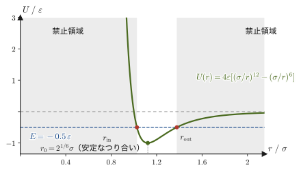
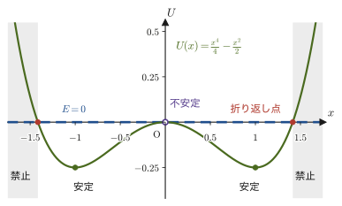

第4章仕事とエネルギー
高い所から物を落とすと速くなる，バネを縮めて放すとおもりが飛び出す，坂道を自転車で登るのはブレーキをかけながら下るよりずっと疲れる——こうした経験は，すべて「エネルギー」という1つの量でつながっている．高校物理では，仕事を $W=Fx$（力と移動距離の積，ただし力の向きと動く向きが同じ場合）として習い，運動エネルギー $\frac12mv^2$ や位置エネルギー $mgh,\ \frac12kx^2$ を公式として覚え，「力学的エネルギー保存則」を使って様々な問題を解いてきたはずである．
この章では，これらの公式がどこから来るのかを，ベクトルの内積とニュートンの運動方程式だけから出発して導き直す．仕事は「力ベクトルと変位ベクトルの内積」として定義され，そこから力学的エネルギー保存則までが，一本の論理の糸でつながっていることを確認する．途中には，最初に習った公式では扱えない状況——曲がった道の上で摩擦を受けながら動く物体の仕事——も登場する．そこで「保存力」という新しい概念が必要になる理由が見えてくるはずである．
本章の内容は，姉妹編「大学数学（AD 02）」第18–20章（スカラー場・ベクトル場，勾配・発散・回転，線積分と経路独立性）で学ぶベクトル解析の考え方を，初めて具体的な物理現象——仕事とポテンシャルエネルギー——に応用する場面でもある．
- 高校の $W=Fs\cos\theta$ から出発して，仕事 $W=\int_C\bm F\cdot\dd\bm r$ の定義（正・0・負の仕事，単位 $\mathrm J$）と，内積が持つ「影響の大きさ」という意味
- ニュートンの運動方程式から，仕事エネルギー定理 $W=\frac12mv_2^2-\frac12mv_1^2$ を導くこと
- 曲線に沿った運動で，摩擦を含む仕事を接線・法線ベクトルを使って計算する方法
- 保存力の定義 $\bm F_c=-\nabla U$ と，それが $\rot\bm F=\bm0$ かつ仕事が経路によらないことと同値であること
- 重力・ばねの力・万有引力が保存力であることの確認と，摩擦力が保存力でないことの理由
- 力学的エネルギー保存則 $U_1+K_1=U_2+K_2$ と，その適用条件
- 仕事率 $P=\bm F\cdot\bm v$ と，ポテンシャルエネルギー曲線 $U(x)$ から運動の可否・折り返し点・安定なつり合いを読み取る方法
もとにしたノート：望月泰英『物理学ノート 力学』 pp. 9–12．
4.1 仕事の定義 — 力と変位の内積
高校物理では，仕事を「力の大きさ × 力の向きに動いた距離」として習った．この節では，この定義を2段階で一般化する．(1) 力の向きと動く向きが一致しない場合，(2) 力が場所とともに変わり，質点が曲がった道を動く場合．まず最も簡単な，力が一定で質点がまっすぐ動く場合から出発しよう．摩擦のない水平面上で，質量 $m$ の物体に一定の力 $\bm F=[f_x,f_y]$（$f_y$ は上向きで，物体が床から離れない程度の大きさとする）を加え続け，物体が $x=x_1$ から $x=x_2$ まで（箱の左端の位置を $x$ とする），$x$ 軸に沿ってまっすぐ移動したとする（図4.1）．物体の変位ベクトルは $\Delta\bm r=[x_2-x_1,\,0]$ である（$y$ 成分は0．水平面上を動くので高さは変わらない）．
移動距離と，移動の向き（$x$ 方向）にはたらく力の成分 $f_x$ との積が仕事である，というのが高校物理での仕事の定義だった．これを式で書けば，
\begin{equation} W=f_x(x_2-x_1) \label{eq:4-work-const} \end{equation}である．鉛直方向の力の成分 $f_y$（および垂直抗力 $N$ や重力 $mg$）は，物体が水平にしか動かない以上，物体の変位には何の影響も与えない——これらの力は，この運動に対して仕事をしない．
導出：式 \eqref{eq:4-work-const} は力と変位の内積 $\bm F\cdot\Delta\bm r$ に等しい
力 $\bm F=[f_x,f_y]$ と変位 $\Delta\bm r=[x_2-x_1,\,0]$ の内積を，成分ごとの積の和として計算する（内積の定義，大学数学 第15章 15.2 節）．
$$ \bm F\cdot\Delta\bm r=[f_x,f_y]\cdot[x_2-x_1,\,0]=f_x(x_2-x_1)+f_y\cdot0=f_x(x_2-x_1) $$右辺は式 \eqref{eq:4-work-const} の $W$ とまったく同じ式になった．したがって，力が一定で質点が直線上を動く場合には，
\begin{equation} W=\bm F\cdot\Delta\bm r \label{eq:4-work-fdotdr} \end{equation}と書ける．
（導出終わり）
内積は $\bm F\cdot\Delta\bm r=\abs{\bm F}\abs{\Delta\bm r}\cos\theta$（$\theta$ は $\bm F$ と $\Delta\bm r$ のなす角）とも書けるので，移動距離を $s=\abs{\Delta\bm r}$，力の大きさを $F=\abs{\bm F}$ と書けば，式 \eqref{eq:4-work-fdotdr} は高校で習った
$$ W=Fs\cos\theta $$にほかならない．$\theta=0^\circ$（力が動く向きと同じ向き）なら $W=Fs$ で，最初に習った「力×距離」に戻る．
イメージ：仕事は正にも0にも負にもなる
$\cos\theta$ の符号から，仕事の符号は力と変位のなす角で決まる．$\theta\lt90^\circ$（力が動く向きに押している）なら $W\gt0$，$\theta=90^\circ$（力が動く向きに垂直）なら $W=0$，$\theta\gt90^\circ$（力が動く向きにブレーキをかけている）なら $W\lt0$ である．たとえば荷物を持ち上げるとき，手が荷物にする仕事は正だが，重力が荷物にする仕事は負である（重力は下向き，変位は上向きで $\theta=180^\circ$，$W=-mgh$）．この「負の仕事」は，以降の節（摩擦の仕事，保存力の仕事）で自然に使うので，ここで慣れておこう．
仕事の単位は，$1\ \mathrm N$ の力で $1\ \mathrm m$ 動かしたときの仕事を $1\ \mathrm J$（ジュール）として，
$$ 1\ \mathrm J=1\ \mathrm{N\,m}=1\ \mathrm{kg\,m^2/s^2} $$である．
イメージ：内積は「影響の大きさ」を測る
式 \eqref{eq:4-work-fdotdr} からわかるのは，力 $\bm F$ が実際にした仕事には，変位 $\Delta\bm r$ と同じ向きの力の成分だけが寄与する，ということである．力がどれほど大きくても，変位に垂直な成分（この例では $f_y$）は仕事にまったく寄与しない．これは，内積 $\bm a\cdot\bm b=\abs{\bm a}\abs{\bm b}\cos\theta$（$\theta$ は $\bm a,\bm b$ のなす角）が，$\bm b$ の向きに $\bm a$ をどれだけ「射影」できるかを測る量であることの表れである（大学数学 第15章 15.2 節）．一般に，内積 $\bm a\cdot\bm b$ とは，ある方向（$\bm b$ の向き）に沿って，ベクトル $\bm a$ がどれだけの「影響」を及ぼしたかを表す量だと理解しておくとよい．仕事の場合，その「影響」とは，物体を実際に動かす向きに力がどれだけ効いたか，ということである．
ここまでは力が一定で，道がまっすぐだった．しかし現実には，ばねの力のように力が位置とともに変わることも，曲がった道の上を動くこともある．そのときは，軌道をごく短い区間に区切れば，各区間ではほぼ「力が一定で道がまっすぐ」とみなせるので，各区間で式 \eqref{eq:4-work-fdotdr} を使い，それらをすべて足し合わせればよい．これが次の定義である．
定義4.1 仕事
質点が力 $\bm F$ を受けながら，軌道（経路）$C$ に沿って動くとき，
\begin{equation} W=\int_C\bm F\cdot\dd\bm r \label{eq:4-work-def} \end{equation}を，力 $\bm F$ が質点にした仕事（work）$W\ [\mathrm{J}]$ と定義する．ここで $\dd\bm r$ は，質点が軌道 $C$ に沿ってごくわずかに進む変位ベクトル（微小変位）であり，$\int_C(\cdot)\,\dd\bm r$ は「軌道 $C$ を細かく区切り，各区間で（被積分量）$\cdot\dd\bm r$ を内積で計算し，それらをすべて足し合わせる」という操作（線積分，line integral）を表す記号である．力が一定で軌道が直線のときは，式 \eqref{eq:4-work-fdotdr} に一致する（一定のベクトルの線積分は，そのベクトルと全変位との内積に等しい）．線積分の厳密な定義は，大学数学 第20章 20.2 節で扱う．
数学の道具：線積分の計算のしかた
線積分は，軌道を1つの変数で表して，ふつうの1変数の定積分に直して計算する．(a) 時刻 $t$ を変数にする方法：軌道を $\bm r(t)=[x(t),y(t)]$（$t$ が $t_1$ から $t_2$ まで）と表すと，$\dd\bm r=\dfrac{\dd\bm r}{\dd t}\dd t$ なので $W=\displaystyle\int_{t_1}^{t_2}\bm F\cdot\dfrac{\dd\bm r}{\dd t}\,\dd t$．(b) $x$ を変数にする方法：軌道が曲線 $y=f(x)$ のとき，$\dd\bm r=[\dd x,\ f'(x)\,\dd x]$ なので $W=\displaystyle\int_{x_1}^{x_2}\big(F_x+F_yf'(x)\big)\,\dd x$．本章では 4.3 節（(b) の方法）と 4.4.3 節（(a) の方法）で実際に使う．詳しくは大学数学 第20章 20.2 節を参照．
イメージ：時間積分（力積）と軌道積分（仕事）の違い
第2章では，力 $\bm F$ を時刻について積分すると力積 $\int\bm F\,\dd t$ になり，運動量の変化 $\Delta\bm p$ に等しいことを見た．同じ「力を積分する」という操作でも，何について積分するかによって得られる物理量はまったく違う．時刻 $t$ について積分すれば，力がどれだけの時間はたらき続けたかが効いてくる力積 $\int\bm F\,\dd t=\Delta\bm p$（ベクトル量）になる．一方，質点が実際に動いた軌道の長さ・向きに沿って積分すれば，力がどれだけの距離，しかもどの向きに効いたかが効いてくる仕事 $W=\int_C\bm F\cdot\dd\bm r$（スカラー量，内積をとっているのでベクトルではない）になる．同じ力でも，質点を長時間押さえつけたままほとんど動かさなければ力積は大きいが仕事はほぼ0であり，逆に軽く押しただけで質点が大きく動けば力積は小さいが仕事は大きくなりうる——力積と仕事は，同じ力から生まれる別々の情報を取り出す量なのである．
例題4.1 一定の力による仕事
水平でなめらかな床の上に置かれた質量 $2.0\ \mathrm{kg}$ の物体に，水平から $30^\circ$ 上向きに $10\ \mathrm{N}$ の力を加え続け，物体を床に沿って水平に $3.0\ \mathrm{m}$ 移動させた（物体は床から離れない）．(1) この力がした仕事 $W$ を求めよ．(2) 床が物体に及ぼす垂直抗力の大きさ $N$ と，垂直抗力および重力がした仕事を求めよ．重力加速度は $g=9.8\ \mathrm{m/s^2}$ とする．
解答 (1) 力の水平成分（変位の向きの成分）は $f_x=10\cos30^\circ\ \mathrm{N}$ である．鉛直成分 $f_y=10\sin30^\circ\ \mathrm{N}$ は，物体が水平にしか動かないため仕事に寄与しない．式 \eqref{eq:4-work-const} より，
$$ W=f_x(x_2-x_1)=(10\cos30^\circ\ \mathrm{N})\times(3.0\ \mathrm{m})=10\times\frac{\sqrt3}{2}\times3.0\ \mathrm{N\,m}\approx26\ \mathrm{J} $$（$\mathrm{N\,m}=\mathrm{J}$ である．この計算に物体の質量は使わない——仕事は力と変位だけで決まる．）
(2) 物体は床から離れず鉛直方向に加速しないので，鉛直方向の力はつり合っている：$N+f_y=mg$．したがって
$$ N=mg-f_y=2.0\times9.8-10\sin30^\circ=19.6-5.0=14.6\ \mathrm N $$である（$mg=19.6\ \mathrm N$ より $5.0\ \mathrm N$ だけ小さい．図4.1 の $N$ が $mg$ より短いのはこのためである）．垂直抗力も重力も鉛直方向の力で，変位 $\Delta\bm r=[3.0\ \mathrm m,\,0]$ は水平だから，内積はどちらも $0$ である：
$$ W_{N}=[0,N]\cdot[3.0,0]=0,\qquad W_{mg}=[0,-mg]\cdot[3.0,0]=0 $$つまり，垂直抗力と重力は仕事をしない．（この物体の運動エネルギーがどれだけ増えたかは，次節の仕事エネルギー定理で調べる．）
4.2 仕事と運動エネルギー — 仕事エネルギー定理
前節では，物体が直線上を動く簡単な場合に仕事を計算した．ここでは，物体が一般に曲がった軌道 $C$ を描いて動く場合に，仕事 $W=\int_C\bm F\cdot\dd\bm r$（定義4.1．ここでの $\bm F$ は，物体にはたらく力の合力とする）が，運動エネルギーとどう結びつくかを見る．出発点は，ニュートンの運動方程式（第2章）
$$ m\ddot{\bm r}=\bm F $$である．第3章で見たとおり，一般の曲線運動の加速度は，単位接線ベクトル $\bm e_t$（進行方向を向く単位ベクトル）と単位主法線ベクトル $\bm e_n$（軌道が曲がる向きを向く単位ベクトル，$\bm e_t\perp\bm e_n$）を使って，
$$ \ddot{\bm r}=\frac{\dd v}{\dd t}\bm e_t+\frac{v^2}{\rho}\bm e_n $$と分解できる（$v=\abs{\dot{\bm r}}$ は速さ，$\rho$ は曲率半径）．運動方程式にこれを代入すると，
$$ \bm F=m\ddot{\bm r}=m\frac{\dd v}{\dd t}\bm e_t+m\frac{v^2}{\rho}\bm e_n $$となる．これを，始点 $P_1$（時刻 $t_1$）から終点 $P_2$（時刻 $t_2$）までの仕事の定義に代入しよう．
$$ W=\int_{P_1}^{P_2}\bm F\cdot\dd\bm r=\int_{P_1}^{P_2}\left(m\frac{\dd v}{\dd t}\bm e_t+m\frac{v^2}{\rho}\bm e_n\right)\cdot\dd\bm r $$数学の道具：微小変位ベクトル $\dd\bm r$ を接線方向に書き直す
質点は軌道 $C$（曲線）の上を動くので，ごくわずかな時間に質点が進む変位ベクトル $\dd\bm r$ は，その瞬間の進行方向，つまり単位接線ベクトル $\bm e_t$ と同じ向きを向く．その大きさは，質点が軌道に沿って実際に進んだ微小な道のり（弧長要素）である．軌道に沿って測った道のりを $s$ と書き（原点からの距離 $r=\abs{\bm r}$ とは別のものなので，文字を分けておく），その微小な増分を $\dd s$ と書くと，
$$ \dd\bm r=\bm e_t\,\dd s $$という関係が成り立つ．（道のりの時間変化率は速さなので $\dd s/\dd t=v$，すなわち $\dd s=v\,\dd t$ であり，これは第3章で速さ $v=\abs{\dot{\bm r}}$ を定義したときに使った関係そのものである．）以下では，この $\dd\bm r=\bm e_t\,\dd s$ を使う．
単位ベクトルの直交性 $\bm e_t\cdot\bm e_t=1$（大きさ1の同じベクトル同士の内積），$\bm e_t\cdot\bm e_n=0$（互いに垂直なベクトル同士の内積，大学数学 第15章 15.2 節）を用いて，$\dd\bm r=\bm e_t\,\dd s$ を代入すると，
$$ W=\int_{P_1}^{P_2}\left(m\frac{\dd v}{\dd t}\underbrace{\bm e_t\cdot\bm e_t}_{=1}+m\frac{v^2}{\rho}\underbrace{\bm e_n\cdot\bm e_t}_{=0}\right)\dd s=\int_{P_1}^{P_2}m\frac{\dd v}{\dd t}\,\dd s $$となる．法線方向の項がきれいに消えたことに注目しよう——これは，4.1 節で見た「変位と垂直な力の成分は仕事に寄与しない」という事実の，加速度バージョンである．運動を曲げる向き（法線方向）の力の効果は仕事には現れず，運動の速さを変える向き（接線方向）の力の効果だけが仕事として現れる．
導出：仕事エネルギー定理
残った積分 $\displaystyle\int_{P_1}^{P_2}m\frac{\dd v}{\dd t}\,\dd s$ を計算する．積分変数を道のり $s$ から時刻 $t$ に置き換える（置換積分）．$\dd s=v\,\dd t$ なので，質点が $P_1$ を通る時刻を $t_1$，$P_2$ を通る時刻を $t_2$ とすると，
$$ \int_{P_1}^{P_2}m\frac{\dd v}{\dd t}\,\dd s=\int_{t_1}^{t_2}m\frac{\dd v}{\dd t}\,v\,\dd t=\int_{t_1}^{t_2}mv\frac{\dd v}{\dd t}\,\dd t $$となる．ここで，$\dfrac12mv^2$ を時刻 $t$ で微分すると，合成関数の微分（大学数学 第6章 6.4 節と同じ連鎖律）により
$$ \frac{\dd}{\dd t}\left(\frac12mv^2\right)=\frac12m\cdot2v\,\frac{\dd v}{\dd t}=mv\frac{\dd v}{\dd t} $$である．これはちょうど被積分関数に一致する．したがって，被積分関数は $\dfrac12mv^2$ の時間微分そのものであり，微分の積分は元の関数の差になる（微分積分学の基本定理，大学数学 第5章 5.2 節）：
$$ W=\int_{t_1}^{t_2}\frac{\dd}{\dd t}\left(\frac12mv^2\right)\dd t=\left[\frac12mv^2\right]_{t_1}^{t_2} $$定積分を計算すると，
\begin{equation} W=\frac12mv^2(t_2)-\frac12mv^2(t_1) \label{eq:4-workenergy} \end{equation}が得られる．（$\dd v$ と $\dd t$ を分数のように動かす形式的な計算でも同じ結果になる．$\dd s\to v\,\dd t$，$\dfrac{\dd v}{\dd t}\dd s=\dfrac{\dd s}{\dd t}\dd v=v\,\dd v$ として $\int mv\,\dd v=\dfrac12mv^2$ とするやり方で，これは上の置換積分を簡略に書いたものである．）
（導出終わり）
定義4.2 運動エネルギー
速さ $v$ で動く質量 $m$ の質点がもつ量
$$ K\equiv\frac12mv^2 $$を，その質点の運動エネルギー（kinetic energy）$K\ [\mathrm{J}]$ という．高校物理で公式として学んだ $\frac12mv^2$ と同じものである．
定理4.1 仕事エネルギー定理
質点にはたらく力の合力 $\bm F$ が，質点が $P_1$（そのときの速さ $v_1$）から $P_2$（速さ $v_2$）まで動く間にした仕事を $W$ とすると，
\begin{equation} W=K_2-K_1=\frac12mv_2^2-\frac12mv_1^2 \label{eq:4-workenergy-thm} \end{equation}が成り立つ．すなわち，合力がした仕事は，運動エネルギーの変化に等しい．これを仕事エネルギー定理（work–energy theorem）という．
イメージ：定理4.1 の適用範囲
定理4.1 の $\bm F$ は，質点にはたらくすべての力の合力であることに注意しよう（$m\ddot{\bm r}=\bm F$ という運動方程式そのものから出発したので，$\bm F$ は必ず合力である）．したがって，物体に垂直抗力・重力・摩擦力・張力など複数の力がはたらいている場合，定理4.1 を使うには，それぞれの力がした仕事をすべて足し合わせた「合計の仕事」を使わなければならない．また，この定理は力が保存力であるかどうかにかかわらず，つねに成り立つ——摩擦のような非保存力（4.4 節で定義する）が混じっていても，合力の仕事とエネルギー変化の関係は変わらない．次節では，まさに摩擦を含む例でこのことを確認する．
例題4.2 仕事エネルギー定理による速さの計算
静止していた質量 $5.0\ \mathrm{kg}$ の台車に，合計 $40\ \mathrm{J}$ の仕事がなされた．台車の最終的な速さ $v$ を求めよ．
解答 初め静止していたので $v_1=0$，したがって $K_1=0$．仕事エネルギー定理（式 \eqref{eq:4-workenergy-thm}）より，
$$ W=K_2-K_1=\frac12mv^2-0 $$$W=40\ \mathrm{J}$，$m=5.0\ \mathrm{kg}$ を代入すると，
$$ 40=\frac12\times5.0\times v^2 \quad\Longrightarrow\quad v^2=\frac{2\times40}{5.0}=16\ \mathrm{m^2/s^2} \quad\Longrightarrow\quad v=4.0\ \mathrm{m/s} $$（次元の確認：$\mathrm{J/kg}=\mathrm{(kg\,m^2/s^2)/kg}=\mathrm{m^2/s^2}$ なので平方根をとると $\mathrm{m/s}$ になり，速さの単位として正しい．）
4.3 曲線上での仕事 — 摩擦がある場合の例
前節までの枠組みを，実際に曲がった経路の上で，しかも摩擦力を受けながら動く場合に適用してみよう．平面内の曲線 $y=f(x)$ の上を運動する質点について，接線ベクトル $\bm e_t$ と法線ベクトル $\bm e_n$ を具体的な成分で書き下し，仕事を計算する典型的な例である．力の数え上げと，どの力がどの向きにはたらくかの整理が大切になる．
例4.1 曲線 $y=\sin x$ 上を摩擦を受けながら動く質点の仕事
問題 曲線 $y=\sin x\ (0\le x\le\pi/2)$ の上に質量 $m$ の質点があり，動摩擦係数 $\mu$ の摩擦を受けながら，$x=0$ から $x=\pi/2$ まで，曲線に沿って（常に曲線上にとどまりながら）ゆっくりと，つり合いを保ちながら引き上げられる．質点が受ける力は，重力 $\bm F_1=[0,-mg]$，曲線が押す垂直抗力（大きさ $N$，向きは曲線から外向き，すなわち $-\bm e_n$ の向き．この章の $N$ は垂直抗力の大きさで，力のモーメント $\bm N=\bm r\times\bm F$ とは別のものである．力のモーメントを本格的に使う第10章では，混同を避けるため垂直抗力を $F_N$ と書く），動摩擦力 $\bm F_2$，そして質点を引き上げる外力 $\bm F$ の4つである．外力 $\bm F$ は曲線に沿った向き（接線方向）に加える．この外力 $\bm F$ が質点にした仕事はいくらか．重力加速度を $g$ とする．
解答 図4.2 のように力を整理しながら進める．まず曲線 $y=\sin x$ の接線ベクトルは，$x$ の増加方向を向く単位ベクトルとして，
$$ \bm e_t=\left[\frac{1}{\sqrt{1+\cos^2x}},\ \frac{\cos x}{\sqrt{1+\cos^2x}}\right] $$である（曲線上を $x$ が $\dd x$ だけ増えると，$y$ は $\dd y=\dfrac{\dd(\sin x)}{\dd x}\dd x=\cos x\,\dd x$ だけ変化するので，変位ベクトルの向きは $[1,\cos x]$ に比例する．これを大きさ1になるように割ったのが $\bm e_t$ である）．これに垂直で，第3章の定義どおり曲がっていく側（曲線の内側，この山型では下向き）を向く単位主法線ベクトルは，
$$ \bm e_n=\left[\frac{\cos x}{\sqrt{1+\cos^2x}},\ \frac{-1}{\sqrt{1+\cos^2x}}\right] $$である（$\bm e_t\cdot\bm e_n=\dfrac{\cos x-\cos x}{1+\cos^2x}=0$ で直交性を確認できる．垂直抗力は曲線から外向き，つまり $-\bm e_n$ の向きにはたらく）．接線 $\bm e_t$ と水平（$x$ 軸）のなす角を $\theta$（$0\le\theta\le\pi/4$）とすると，曲線の傾きが $\cos x$ であることから $\tan\theta=\cos x$ であり，三角関数の関係 $1+\tan^2\theta=1/\cos^2\theta$ を使うと，
$$ \cos^2\theta=\frac{1}{1+\tan^2\theta}=\frac{1}{1+\cos^2x} $$が成り立つ．
力のつり合い．ゆっくり動かすので，加速度はほとんど0であり（第3章の式で $\dd v/\dd t$ の項も $v^2/\rho$ の項も無視できる），4つの力の和は $\bm 0$ である：
$$ \bm F_1-N\bm e_n+\bm F_2+\bm F=\bm 0 $$$\bm F_2$ と $\bm F$ は接線方向（$\bm e_t$ の向き）なので，この式に $\bm e_n$ との内積をとると，法線方向のつり合いとして $\bm F_1\cdot\bm e_n-N=0$ が得られる．重力 $\bm F_1=[0,-mg]$ の法線成分は $\bm F_1\cdot\bm e_n=mg/\sqrt{1+\cos^2x}$（正，つまり曲線の内側へ向く）なので，
$$ N=\bm F_1\cdot\bm e_n=\frac{mg}{\sqrt{1+\cos^2x}}=mg\cos\theta $$である．動摩擦力は，大きさが垂直抗力に比例し（動摩擦の法則），向きは運動を妨げる向き，つまり $-\bm e_t$ の向きなので，
$$ \bm F_2=-\mu N\bm e_t=\mu mg\left[\frac{-1}{1+\cos^2x},\ \frac{-\cos x}{1+\cos^2x}\right] $$となる．次に，接線方向のつり合いを考える．外力を $\bm F=F_t\bm e_t$ と書くと，$\bm e_t$ との内積から $\bm F_1\cdot\bm e_t-\mu N+F_t=0$ である．重力の接線成分は $\bm F_1\cdot\bm e_t=-mg\cos x/\sqrt{1+\cos^2x}=-mg\sin\theta$（$\sin\theta=\tan\theta\cos\theta=\cos x/\sqrt{1+\cos^2x}$）なので，
$$ F_t=mg\sin\theta+\mu N=\frac{mg\cos x+\mu mg}{\sqrt{1+\cos^2x}} $$を得る．「坂を引き上げる力は，重力の坂に沿った成分と，摩擦力の和」という高校物理そのままの結果である．
仕事の計算．曲線に沿った微小変位は $\dd\bm r=[\dd x,\ \dd y]=[\dd x,\ \cos x\,\dd x]$（$y=\sin x$ の微分そのもの）であり，その大きさ（弧長要素）は $\dd s=\sqrt{1+\cos^2x}\,\dd x$ である．$\dd\bm r=\bm e_t\,\dd s$ なので，$\bm F=F_t\bm e_t$ の内積は
$$ \bm F\cdot\dd\bm r=F_t\,\bm e_t\cdot\bm e_t\,\dd s=F_t\,\dd s=\frac{mg\cos x+\mu mg}{\sqrt{1+\cos^2x}}\cdot\sqrt{1+\cos^2x}\,\dd x=\big(mg\cos x+\mu mg\big)\,\dd x $$と，根号がきれいに約分される．したがって，外力がする仕事は，
$$ W=\int_0^{\pi/2}\big(mg\cos x+\mu mg\big)\,\dd x=\Big[mg\sin x\Big]_0^{\pi/2}+\Big[\mu mg\,x\Big]_0^{\pi/2} $$となり，
\begin{equation} W=mg(\sin\tfrac{\pi}2-\sin0)+\mu mg\left(\tfrac{\pi}2-0\right)=mg+\mu mg\cdot\frac{\pi}{2} \label{eq:4-friction-example} \end{equation}が得られる．
別の計算（垂直抗力を別扱いしない場合）．外力を $\bm F'=-(\bm F_1+\bm F_2)$ と置いて計算してもまったく同じ結果になる．$\bm F'$ は重力と摩擦力を打ち消す力で，実際の外力 $\bm F$ とは，法線成分 $-N\bm e_n$ の違いだけがある（$\bm F=\bm F'+N\bm e_n$）．法線方向の力 $-N\bm e_n$ は $\dd\bm r$ に垂直で仕事をしないので，$\bm F\cdot\dd\bm r=\bm F'\cdot\dd\bm r$ である．成分で書くと $\bm F'=\Big[\dfrac{\mu mg}{1+\cos^2x},\ \ mg+\dfrac{\mu mg\cos x}{1+\cos^2x}\Big]$ なので，
$$ W=\int_0^{\pi/2}\bm F'\cdot\dd\bm r=\int_0^{\pi/2}\frac{\mu mg}{1+\cos^2x}\,\dd x+\int_0^{\pi/2}mg\cos x\,\dd x+\int_0^{\pi/2}\frac{\mu mg\cos^2x}{1+\cos^2x}\,\dd x $$となる．第1項と第3項をまとめると，$\dfrac{\mu mg}{1+\cos^2x}+\dfrac{\mu mg\cos^2x}{1+\cos^2x}=\mu mg\cdot\dfrac{1+\cos^2x}{1+\cos^2x}=\mu mg$（分子と分母が一致して約分できる）となり，$x$ に依存しない定数になる．したがって $W=\int_0^{\pi/2}mg\cos x\,\dd x+\int_0^{\pi/2}\mu mg\,\dd x$ となり，上と同じ式 \eqref{eq:4-friction-example} に到達する．
注意：$\mu mg\cdot\dfrac{\pi}{2}$ に注目
式 \eqref{eq:4-friction-example} の結果 $W=mg+\mu mg\cdot\dfrac{\pi}{2}$ の第1項 $mg$ は，質点の高さが $0$ から $\sin(\pi/2)=1$ まで上がったことによる重力の効果（$mg\times$高さの変化）にほかならない．一方，第2項 $\mu mg\cdot\dfrac{\pi}{2}$ は摩擦のぶんだけ余分に必要になった仕事であり，$\pi/2$ はちょうど質点が水平方向に進んだ距離（$x$ の変化量）に等しい．つまり，この結果は「外力の仕事＝重力に逆らう分（高さ×$mg$）＋摩擦に逆らう分（水平距離×$\mu mg$）」というきれいな形に分解できている．次の考察で，この分解が曲線の形によらずに成り立つことを確かめる．
確認：各力の仕事の合計は運動エネルギーの変化に等しい（定理4.1）
4.2 節で述べたとおり，定理4.1 の $W$ は「合力の仕事」，すなわちすべての力の仕事の合計である．例4.1 で，各力がした仕事を別々に計算して足し合わせてみよう．どの仕事も $\dd\bm r=[\dd x,\cos x\,\dd x]=\bm e_t\,\dd s$，$\dd s=\sqrt{1+\cos^2x}\,\dd x$ を使って積分する．
- 外力：$W_{\text{外力}}=mg+\mu mg\dfrac\pi2$（式 \eqref{eq:4-friction-example}）．
- 重力：$W_{\text{重力}}=\displaystyle\int_0^{\pi/2}[0,-mg]\cdot[1,\cos x]\,\dd x=-mg\int_0^{\pi/2}\cos x\,\dd x=-mg$．
- 垂直抗力：$-N\bm e_n\perp\dd\bm r$ なので $W_N=0$．
- 動摩擦力：$W_{\text{摩擦}}=\displaystyle\int\bm F_2\cdot\dd\bm r=-\int_0^{\pi/2}\mu N\,\dd s=-\int_0^{\pi/2}\frac{\mu mg}{\sqrt{1+\cos^2x}}\sqrt{1+\cos^2x}\,\dd x=-\mu mg\frac\pi2$．
4つを足すと $\big(mg+\mu mg\tfrac\pi2\big)+(-mg)+0+\big(-\mu mg\tfrac\pi2\big)=0$ となる．ゆっくり動かしたので運動エネルギーは（ほとんど）変化せず $K_2-K_1=0$ であり，定理4.1 とたしかに一致する．摩擦という非保存力（4.4 節で定義する）が混じっていても定理4.1 が成り立つことが確かめられた．外力が「余分に」した仕事は，重力による位置エネルギーの増加 $mg$ と，摩擦で失われる（熱になる）$\mu mg\dfrac\pi2$ に配分されたことになる．
（確認終わり）
考察：摩擦の負の仕事は，なぜ水平距離だけで決まるのか
例4.1 の計算を一般の曲線 $y=f(x)$（$0\le x\le X$，$f$ は微分可能で質点は常に $x$ が増える向きに動くとする）に対して行っても，同じ構造が現れる．接線ベクトルは $\bm e_t=[1,f'(x)]/\sqrt{1+f'(x)^2}$ であり，外力を接線方向に加えてゆっくり引き上げるなら，垂直抗力の大きさは $N=mg/\sqrt{1+f'(x)^2}$（例4.1 と同じ計算），弧長要素は $\dd s=\sqrt{1+f'(x)^2}\,\dd x$ である．摩擦力がする仕事は，摩擦力の大きさ $\mu N$ に，向きが常に運動と逆向きであることから，
$$ W_{\text{摩擦}}=\int_C\bm F_2\cdot\dd\bm r=-\int_C\mu N\,\dd s=-\int_0^X\mu\cdot\frac{mg}{\sqrt{1+f'(x)^2}}\cdot\sqrt{1+f'(x)^2}\,\dd x=-\mu mg\int_0^X\dd x=-\mu mg\,X $$となる．曲線の形（傾き $f'(x)$）が積分の中できれいに約分されて消えてしまうので，摩擦力がする仕事は，曲線の途中の高さや曲がり方にはまったくよらず，質点が水平方向に進んだ距離 $X$ だけで決まる．つまり，出発点から目的地までの水平距離が同じ $a$ であれば，途中の経路がどれだけ高く（あるいは低く）盛り上がっていても——たとえば高さ $b$ の丘を越える経路と，高さ $c$（$\neq b$）の丘を越える別の経路とでも（図4.3）——摩擦力による負の仕事はどちらも同じ $-\mu mga$ になる，ということである．
一方，重力がする仕事 $W_{\text{重力}}=\int_C\bm F_1\cdot\dd\bm r=\int_0^X(-mg)f'(x)\,\dd x=-mg\big[f(X)-f(0)\big]$ も，経路の途中の形によらず，始点と終点の高さの差だけで決まっている．つまり，重力も摩擦力も，仕事が「経路の途中の詳しい形によらない」という共通点を持つが，重力の場合はそれが始点・終点だけで決まるのに対し，摩擦力の場合は質点が実際に動いた水平距離（$x$ が増える一方の経路ならば $X$．経路の途中で $x$ の増減を繰り返せば，その分だけ増える量 $\int\abs{\dd x}$）で決まるという違いがある．次節では，前者の性質（経路によらず2点だけで決まる）を持つ力を「保存力」として定義し，摩擦力がなぜその仲間に入らないのかを確認する．
例題4.3 斜面を一定の速さで引き上げるときの仕事
質量 $3.0\ \mathrm{kg}$ の荷物を，動摩擦係数 $\mu=0.25$ の直線状の斜面（傾角 $30^\circ$，水平距離 $4.0\ \mathrm{m}$）に沿って，斜面に平行な力でゆっくりと，つり合いを保ちながら（一定の速さで）引き上げる．重力加速度を $g=9.8\ \mathrm{m/s^2}$ として，引き上げる力がした仕事 $W$ を求めよ．
解答 直線の斜面は $y=f(x)=x\tan30^\circ$（$0\le x\le4.0\ \mathrm m$）という特別な曲線の場合であり，「考察」で確かめた一般の結果がそのまま使える．水平距離 $X=4.0\ \mathrm m$，高さの変化 $\Delta y=X\tan30^\circ=4.0\times\dfrac{1}{\sqrt3}\approx2.309\ \mathrm m$ である．したがって，
$$ W=mg\,\Delta y+\mu mg\,X=mg\left(X\tan30^\circ+\mu X\right)=mgX\left(\tan30^\circ+\mu\right) $$に数値を代入すると，
$$ W=3.0\times9.8\times4.0\times\left(\frac{1}{\sqrt3}+0.25\right)\approx117.6\times(0.5774+0.25)\approx117.6\times0.8274\approx97\ \mathrm{J} $$（傾角が一定の直線の斜面では，「考察」の一般公式 $W=mg\,\Delta y+\mu mg\,X$ が，高校物理で習う「斜面を引き上げる仕事＝重力にさからう仕事＋摩擦にさからう仕事」という公式そのものになっていることを確認できる．）
4.4 保存力とポテンシャルエネルギー
4.3 節の考察で見たとおり，重力がする仕事は，質点がどんな経路をたどったかにはよらず，始点と終点の高さだけで決まっていた．一方，摩擦力がする仕事は，質点が実際に動いた水平距離（$x$ の増減を繰り返せば，その分だけ増える）で決まり，始点と終点だけでは決まらない．この違いは非常に重要なので，前者のような性質を持つ力に名前を付けて，正式に定義しよう．
4.4.1 保存力の定義とポテンシャルエネルギー
定義4.3 保存力とポテンシャルエネルギー
力 $\bm F_c=[F_x,F_y,F_z]$ の各成分 $F_x,F_y,F_z$ が，質点の位置 $(x,y,z)$ だけの関数として表され（時刻や速度にはよらず），さらに，あるスカラー関数 $U(x,y,z)$ を使って，
\begin{equation} \bm F_c=-\nabla U,\qquad\text{すなわち}\qquad F_x=-\pdiff{U}{x},\quad F_y=-\pdiff{U}{y},\quad F_z=-\pdiff{U}{z} \label{eq:4-conservative-def} \end{equation}と書けるとき，$\bm F_c$ を保存力（conservative force）といい，$U(x,y,z)$ をその保存力のポテンシャル，または位置エネルギー（potential energy）という．
ここで登場した $\nabla$（ナブラ，nabla）は，勾配（gradient，「グラッド」と読む）と呼ばれる演算を表す記号で，スカラー関数 $U(x,y,z)$ から，3つの偏微分 $\pdiff Ux,\pdiff Uy,\pdiff Uz$（大学数学 第6章 6.2 節．$U$ を $x$ 以外の変数を定数とみなして $x$ だけで微分したもの，など）を成分とするベクトル場 $\nabla U=\left[\pdiff Ux,\pdiff Uy,\pdiff Uz\right]$（勾配ベクトル，gradient vector）を作る操作である．勾配ベクトルの定義と，それが「$U$ が最も急激に増加する向きを指し，その大きさが増加の急峻さを表す」という幾何学的な意味については，大学数学 第18章 18.4–18.6 節で詳しく学ぶ．式 \eqref{eq:4-conservative-def} の右辺に付いているマイナス符号は，「保存力は，ポテンシャル $U$ が減少する向き（最も急に下る向き）にはたらく」ということを意味している——ちょうど，坂を転がるボールが低い方へ向かって力を受けるイメージである．
具体例で $\nabla U$ の計算に慣れておこう．$y$ 軸を鉛直上向きにとり，$U=mgy$ とすると，$\pdiff Ux=0,\ \pdiff Uy=mg,\ \pdiff Uz=0$ なので $\nabla U=[0,\,mg,\,0]$，力は $\bm F=-\nabla U=[0,\,-mg,\,0]$ となり，高校物理の重力（下向きに大きさ $mg$）に一致する．また $U=\dfrac12k(x^2+y^2+z^2)$ とすると $\nabla U=[kx,\,ky,\,kz]$ なので，$\bm F=-\nabla U=[-kx,\,-ky,\,-kz]=-k\bm r$，つまり原点に向かってはたらくばねの復元力になる．$U$ が「地形の高さ」だと思えば，$-\nabla U$ は「地形の最も急な下り坂の向きに，その急さに比例する大きさではたらく力」である（図4.4）．
イメージ：なぜポテンシャルの勾配という形で保存力を定義するのか
一見すると，$\bm F_c=-\nabla U$ という定義は天下り的に見えるかもしれない．なぜ，わざわざこのような回りくどい形で力を定義するのだろうか．答えは，この形で定義しておくと，仕事が自動的に経路によらず，始点と終点だけで決まるようになる，という点にある．保存力 $\bm F_c$ がする仕事を計算してみよう．
導出：保存力の仕事は経路によらない
保存力 $\bm F_c=[F_x,F_y,F_z]$ が，質点を点 $P_1$ から点 $P_2$ まで動かす間にする仕事は，定義4.1 より，
$$ W_c=\int_{P_1}^{P_2}\bm F_c\cdot\dd\bm r=\int_{P_1}^{P_2}\left(F_x\,\dd x+F_y\,\dd y+F_z\,\dd z\right) $$である（内積を成分で展開し，$\dd\bm r=[\dd x,\dd y,\dd z]$ とした）．ここで，$U(x,y,z)$ が全微分可能であれば（大学数学 第6章 6.3 節），$U$ の変化量は
$$ \dd U=\pdiff Ux\,\dd x+\pdiff Uy\,\dd y+\pdiff Uz\,\dd z $$と表せる（全微分．$U$ がわずかに動いたときの変化を，各方向の偏微分と各方向の変位の積の和で表したもの）．式 \eqref{eq:4-conservative-def}（$F_x=-\pdiff Ux$ など）をさきほどの仕事の式に代入すると，
$$ W_c=\int_{P_1}^{P_2}\left(-\pdiff Ux\,\dd x-\pdiff Uy\,\dd y-\pdiff Uz\,\dd z\right)=-\int_{P_1}^{P_2}\left(\pdiff Ux\,\dd x+\pdiff Uy\,\dd y+\pdiff Uz\,\dd z\right)=-\int_{P_1}^{P_2}\dd U $$となる．最後の積分は，$U$ の変化量 $\dd U$ を，経路に沿ってすべて足し合わせたものなので，途中の経路によらず，単純に $U$ の終点での値から始点での値を引いたものになる（大学数学 第5章 5.2 節の定積分の性質と同じ考え方である）：
\begin{equation} W_c=-\big[U(P_2)-U(P_1)\big]=U(P_1)-U(P_2) \label{eq:4-conservative-work} \end{equation}（導出終わり）
式 \eqref{eq:4-conservative-work} を見ると，途中の経路 $C$ がどんな形であっても，仕事 $W_c$ は始点 $P_1$ でのポテンシャルの値 $U(P_1)$ と終点 $P_2$ でのポテンシャルの値 $U(P_2)$ の差だけで完全に決まってしまう——これが「保存力の仕事は経路によらない」という性質の理由であり，$\bm F_c=-\nabla U$ という形をわざわざ選んだ理由でもある．
たとえば 図4.5 の点 $A$ から点 $B$ まで，青の直線経路を通っても，紫の半円弧の経路を通っても，保存力の仕事は同じ $U(A)-U(B)$ である．特に，出発点に戻ってくる閉じた経路（$P_2=P_1$）では $U(P_1)-U(P_2)=0$ なので，保存力がする仕事は
\begin{equation} \oint\bm F_c\cdot\dd\bm r=0 \label{eq:4-closed-loop} \end{equation}である（$\oint$ は閉じた経路について1周する線積分を表す記号．大学数学 第20章 20.3 節）．逆に，どこかの閉じた経路で1周の仕事が0でない力は，保存力ではない．
4.4.2 保存力であるための同値条件 — $\rot\bm F=\bm0$
ある力 $\bm F=[F_x,F_y,F_z]$ が与えられたとき，それが保存力かどうか，つまり $\bm F=-\nabla U$ となるような $U$ が存在するかどうかを，$U$ を実際に探さなくても判定できる便利な条件がある．そのために，まず回転（rotation または curl，「ロット」と読む）という演算を導入する．$\rot\bm F$ は，ベクトル場 $\bm F$ から新しいベクトル場を作る演算で，成分で書くと，
$$ \rot\bm F=\left[\pdiff{F_z}{y}-\pdiff{F_y}{z},\ \ \pdiff{F_x}{z}-\pdiff{F_z}{x},\ \ \pdiff{F_y}{x}-\pdiff{F_x}{y}\right] $$である（$x\to y\to z\to x$ と文字を順に入れ替えると，3つの成分が順に得られる）．たとえば第3成分 $\pdiff{F_y}{x}-\pdiff{F_x}{y}$ は，力の $y$ 成分が $x$ 方向にどう変わるかと，力の $x$ 成分が $y$ 方向にどう変わるかの差であり，力の場が $xy$ 平面内で「渦を巻いている」度合いを表す．渦を巻いている場では，力に沿って1周すると仕事が0にならない（4.4.4 節の例題4.7 で実際に計算する）．回転の定義と，それが「ベクトル場がその点のまわりでどれだけ渦を巻いているか」を表すという意味については，大学数学 第19章 19.4–19.5 節で詳しく学ぶ．
定理4.2 保存力であるための同値条件
力 $\bm F=[F_x,F_y,F_z]$（各成分は $x,y,z$ について連続微分可能，すなわち1回微分できて導関数が連続）が保存力である（あるスカラー関数 $U$ を用いて $\bm F=-\nabla U$ と書ける）ための必要十分条件は，
\begin{equation} \rot\bm F=\bm 0 \label{eq:4-rot-condition} \end{equation}が成り立つことである．ただし，この必要十分性は，考えている領域に「穴」が無い（どんな閉じた経路も連続的に1点に縮められる）場合に成り立つ——本章で扱う空間全体やその中の単連結な領域では常に成立する．
証明：必要性（保存力ならば $\rot\bm F=\bm0$）
$\bm F=-\nabla U$ とする（$U$ は2回連続微分可能とする）．$\rot\bm F$ の第3成分は，$F_y=-\pdiff Uy,\ F_x=-\pdiff Ux$ より
$$ \pdiff{F_y}{x}-\pdiff{F_x}{y}=-\frac{\partial^2U}{\partial x\,\partial y}+\frac{\partial^2U}{\partial y\,\partial x} $$である．偏微分の順序は入れ替えてよい（シュワルツの定理，大学数学 第6章 6.3 節）ので，右辺は $0$ になる．第1・第2成分も，$x,y,z$ を入れ替えた同じ計算で $0$ になる．よって $\rot\bm F=\bm0$ である．すなわち $\rot(\nabla U)=\bm0$ は恒等式である．
（証明終わり）
逆の「十分性」（$\rot\bm F=\bm0$ ならば保存力である）は，経路によらない線積分から $U$ を組み立てて示す．その証明は，ストークスの定理（大学数学 第20章 20.5 節）と，勾配の線積分が経路によらないこと（同 20.3 節）を使って行われる．また，$\rot(\nabla U)=\bm0$ の一般的な導出は大学数学 第19章 19.5 節にある．
4.4.3 中心力は保存力である — 重力・ばね・万有引力
定理4.2 を使って，代表的な3つの力——一様な重力，ばねの弾性力，万有引力——が実際に保存力であることを確かめ，それぞれのポテンシャルエネルギーを求めよう．
例題4.4 一様重力が保存力であることの確認
$xy$ 平面内で $y$ 軸を鉛直上向きにとり，一様な重力 $\bm F=[0,-mg,0]$（$m,g$ は定数）について，(1) $\rot\bm F=\bm0$ であることを示し，(2) ポテンシャルエネルギー $U(x,y,z)$ を求めよ．
解答 (1) $F_x=0,\ F_y=-mg,\ F_z=0$ はいずれも定数（$x,y,z$ によらない）なので，すべての偏微分がゼロになる：$\pdiff{F_z}{y}=\pdiff{F_y}{z}=\pdiff{F_x}{z}=\pdiff{F_z}{x}=\pdiff{F_y}{x}=\pdiff{F_x}{y}=0$．したがって $\rot\bm F=[0,0,0]=\bm0$ であり，定理4.2 より $\bm F$ は保存力である．
(2) $F_x=-\pdiff Ux=0,\ F_z=-\pdiff Uz=0$ より，$U$ は $x,z$ にはよらない．$F_y=-\pdiff Uy=-mg$ より $\pdiff Uy=mg$ なので，$y$ で積分すると $U=mgy+(\text{定数})$．定数を0にとれば，
$$ U(x,y,z)=mgy $$となる（高校物理の $U=mgh$ そのものである．$h$ は基準点からの高さ，ここでは $y$ 座標がそのまま高さを表す）．
定理4.3 中心力は保存力である
原点からの距離 $r=\abs{\bm r}=\sqrt{x^2+y^2+z^2}$ だけの関数 $f(r)$ を使って，
$$ \bm F=f(r)\,\bm e_r,\qquad \bm e_r\equiv\frac{\bm r}{r} $$と書ける力（このような力を中心力，central force という．大きさが原点からの距離だけで決まり，向きが常に原点を通る直線上にある力）は，$f(r)$ の形によらず，つねに保存力である．ただし $f(r)$ は $r\gt0$ で連続微分可能とする．万有引力のように原点で発散する場合は，原点を除いた空間で考える（3次元では，原点を除いても，空間の中の任意の閉じた経路を穴に引っかからずに1点に縮められるので，定理4.2 の条件は満たされる）．
導出：中心力の回転がゼロであること
中心力の成分は，$\bm e_r=[x/r,y/r,z/r]$ なので，$\bm F=f(r)\bm e_r=\left[f(r)\dfrac{x}{r},\ f(r)\dfrac{y}{r},\ f(r)\dfrac{z}{r}\right]$ である．$\rot\bm F$ の $z$ 成分 $\pdiff{F_y}{x}-\pdiff{F_x}{y}$ を計算してみる．$r=\sqrt{x^2+y^2+z^2}$ を $x$ で偏微分すると，合成関数の微分（大学数学 第6章 6.4 節）により $\pdiff rx=\dfrac{x}{r}$ となる（$y,z$ を偏微分するときも同様に $\pdiff ry=y/r,\ \pdiff rz=z/r$）．これを使って，
$$ \pdiff{F_y}{x}=\pdiff{}{x}\!\left[\frac{f(r)}{r}\,y\right]=y\cdot\pdiff{}{x}\!\left[\frac{f(r)}{r}\right]=y\cdot\left(\frac{f'(r)}{r}-\frac{f(r)}{r^2}\right)\pdiff rx=\frac{xy}{r}\left(\frac{f'(r)}{r}-\frac{f(r)}{r^2}\right) $$（$\dfrac{f(r)}{r}$ を $r$ で微分してから，$r$ を $x$ で微分するという合成関数の微分を2段階で行った）．まったく同じ計算を $F_x=f(r)x/r$ について，こんどは $y$ で偏微分すると，
$$ \pdiff{F_x}{y}=x\cdot\pdiff{}{y}\!\left[\frac{f(r)}{r}\right]=x\cdot\left(\frac{f'(r)}{r}-\frac{f(r)}{r^2}\right)\pdiff ry=\frac{xy}{r}\left(\frac{f'(r)}{r}-\frac{f(r)}{r^2}\right) $$となり，$\pdiff{F_y}{x}$ とまったく同じ式になる．したがって $\pdiff{F_y}{x}-\pdiff{F_x}{y}=0$ である．$\rot\bm F$ の残り2成分についても同じ計算になる．実際，$g(r)=f(r)/r$ とおくと $\bm F$ の第 $i$ 成分は $F_i=g(r)\,x_i$（$x_i$ は $x,y,z$ のいずれか）と書け，$i\neq j$ のとき $\pdiff{F_j}{x_i}=x_j\,g'(r)\pdiff r{x_i}=g'(r)\dfrac{x_ix_j}{r}$ となる．これは $i$ と $j$ を入れ替えても変わらない（対称）．$\rot\bm F$ の各成分は $\pdiff{F_j}{x_i}-\pdiff{F_i}{x_j}$ の形なので，3成分すべてが $0$ になる．よって $\rot\bm F=\bm0$ である．
（導出終わり）
導出：中心力のポテンシャルエネルギー
中心力 $\bm F=f(r)\bm e_r$ のポテンシャル $U$ も，やはり原点からの距離 $r$ だけの関数 $U(r)$ になるはずである（力の向きと大きさが原点からの距離だけで決まる以上，ポテンシャルも空間の向きにはよらず距離だけで決まると考えるのが自然である）．$U(r)$ を $x$ で偏微分すると，合成関数の微分と $\pdiff rx=x/r$ を使って，
$$ \pdiff{U}{x}=U'(r)\pdiff rx=U'(r)\frac{x}{r} $$となり，$y,z$ についても同様なので，まとめると
$$ \nabla U=U'(r)\left[\frac xr,\frac yr,\frac zr\right]=U'(r)\,\bm e_r $$である．これが $\bm F=-\nabla U=f(r)\bm e_r$ に等しいためには，$U'(r)=-f(r)$ であればよい．したがって，
\begin{equation} U(r)=-\int f(r)\,\dd r \label{eq:4-central-potential} \end{equation}（不定積分．積分定数は，ポテンシャルの基準点をどこに取るかを決めるもので，物理的には自由に選べる．）
（導出終わり）
例題4.5 ばねの力と万有引力のポテンシャルエネルギー
(1) 自然長の位置を原点とする3次元のばねの復元力 $\bm F=-k\bm r$（$k>0$，$\bm r$ はおもりの位置ベクトル）について，中心力であることを確認し，ポテンシャルエネルギー $U(r)$ を求めよ．(2) 質量 $M$ の質点が原点にあるときに，質量 $m$ の質点が受ける万有引力 $\bm F=-\dfrac{GMm}{r^2}\bm e_r$（$G$ は万有引力定数）のポテンシャルエネルギー $U(r)$ を，$r\to\infty$ で $U\to0$ となるように求めよ．
解答 (1) 成分で書くと $\bm F=-k\bm r=[-kx,\,-ky,\,-kz]$ である．回転の3成分を計算すると，
$$ \pdiff{F_z}{y}-\pdiff{F_y}{z}=0-0=0,\qquad \pdiff{F_x}{z}-\pdiff{F_z}{x}=0-0=0,\qquad \pdiff{F_y}{x}-\pdiff{F_x}{y}=0-0=0 $$（たとえば $F_y=-ky$ は $x,z$ によらないので $x$ や $z$ で偏微分すると $0$）．よって $\rot\bm F=\bm0$ で，ばねの力は保存力である．また $\bm F=-k\bm r=-kr\,\bm e_r$ なので，$f(r)=-kr$ の中心力でもある．式 \eqref{eq:4-central-potential} より，
$$ U(r)=-\int(-kr)\,\dd r=\int kr\,\dd r=\frac12kr^2+(\text{定数}) $$定数を0にとると $U(r)=\dfrac12kr^2$．$1$ 次元（$x$ 軸方向だけのばね）の場合は $r=\abs x$ なので $U(x)=\dfrac12kx^2$ となり，高校物理で習うばねの位置エネルギーの公式に一致する．
(2) $\bm F=-\dfrac{GMm}{r^2}\bm e_r$ なので，$f(r)=-\dfrac{GMm}{r^2}$ の中心力であり，定理4.3 より保存力である．式 \eqref{eq:4-central-potential} より，
$$ U(r)=-\int\left(-\frac{GMm}{r^2}\right)\dd r=\int\frac{GMm}{r^2}\,\dd r=-\frac{GMm}{r}+(\text{定数}) $$（$\displaystyle\int r^{-2}\,\dd r=-r^{-1}+(\text{定数})$，大学数学 第5章 5.1 節の基本公式）．$r\to\infty$ で $U\to0$ となるように定数を0にとると，
$$ U(r)=-\frac{GMm}{r} $$を得る（無限遠を位置エネルギーの基準点に選ぶのは，天体力学で標準的な選び方である．$U(r)\lt0$ は，2つの質点が引力で結びついている，つまり引き離すには外から正の仕事を加える必要があることを表している）．
(3) 高校の $mgh$ との関係．地球の質量を $M$，半径を $R$，地表からの高さを $h$（$h\ll R$）とすると，地表 $r=R$ と高さ $h$ の点 $r=R+h$ の位置エネルギーの差は
$$ U(R+h)-U(R)=-\frac{GMm}{R+h}+\frac{GMm}{R}=\frac{GMm\,h}{R(R+h)}\approx\frac{GM}{R^2}\,mh $$である（$h\ll R$ より $R+h\approx R$ とした）．$g=GM/R^2\approx9.8\ \mathrm{m/s^2}$（地表での重力加速度）とおくと，これは $mgh$ に等しい．つまり，高校で習った $U=mgh$ は，万有引力のポテンシャル $-GMm/r$ の，地表付近での近似だったのである．
確認：一様重力の仕事が経路によらないこと（2通りの経路の比較）
定理4.2 による判定だけでなく，実際に2つの異なる経路について線積分を計算し，同じ値になることを直接確かめておこう．一様重力 $\bm F=[0,-mg]$（$xy$ 平面内の2次元で考える）のもとで，点 $A=(0,0)$ から点 $B=(3,2)\ [\mathrm m]$ まで質点が動くときの仕事を，(i) $A$ から $B$ まで一直線に進む経路と，(ii) 先に水平に $(3,0)$ まで進み，そこから鉛直に $(3,2)$ まで進む経路（L字形の経路）の2通りで計算する．
(i) 直線経路 $\bm r(t)=[3t,2t]$（$t:0\to1$）とパラメータ表示すると，$\dd\bm r=[3,2]\,\dd t$ である．
$$ W_{(\mathrm i)}=\int_0^1[0,-mg]\cdot[3,2]\,\dd t=\int_0^1(-2mg)\,\dd t=-2mg $$(ii) L字形経路 まず $(0,0)$ から $(3,0)$ まで（水平方向，$\dd\bm r=[\dd x,0]$）：$\bm F\cdot\dd\bm r=0\cdot\dd x+(-mg)\cdot0=0$ なので，この区間の仕事は0．次に $(3,0)$ から $(3,2)$ まで（鉛直方向，$\dd\bm r=[0,\dd y]$）：
$$ \int_0^2[0,-mg]\cdot[0,\dd y]=\int_0^2(-mg)\,\dd y=-2mg $$したがって $W_{(\mathrm{ii})}=0+(-2mg)=-2mg$．
2つの経路の仕事は，どちらも $-2mg$ で一致した．しかも，この値は $U(A)-U(B)=mg\times0-mg\times2=-2mg$（例題4.4 の $U=mgy$ を使った）とも一致している．経路の形（直線か，L字形か）がまったく違うのに同じ仕事になる，というのが「保存力の仕事は経路によらない」ということの具体的な意味である．
（確認終わり）
確認：ばねの力と万有引力の仕事も経路によらないこと
ばねの力 $\bm F=[-kx,-ky]$（$xy$ 平面内）について，原点 $A=(0,0)$ から点 $B=(a,b)$ まで，(i) 直線 $\bm r(t)=[at,bt]$（$t:0\to1$，$\dd\bm r=[a,b]\,\dd t$）と，(ii) 先に $x$ 軸方向に $(a,0)$ まで進み，そこから $y$ 軸方向に $(a,b)$ まで進むL字形の経路，で仕事を計算する．
$$ W_{(\mathrm i)}=\int_0^1[-kat,\,-kbt]\cdot[a,\,b]\,\dd t=-k(a^2+b^2)\int_0^1t\,\dd t=-\frac12k(a^2+b^2) $$ $$ W_{(\mathrm{ii})}=\int_0^a(-kx)\,\dd x+\int_0^b(-ky)\,\dd y=-\frac12ka^2-\frac12kb^2 $$どちらも $-\dfrac12k(a^2+b^2)$ で，$U(A)-U(B)=0-\dfrac12k(a^2+b^2)$ と一致する．
万有引力 原点にある質量 $M$ の質点が，質量 $m$ の質点に及ぼす力 $\bm F=-\dfrac{GMm}{r^2}\bm e_r$ について，点 $P_1$（原点から距離 $r_1$，$x$ 軸上）から点 $P_2$（原点から距離 $r_2\gt r_1$，$x$ 軸から角度 $\varphi$ だけ回った方向）まで動かす．経路 (i)：まず半径 $r_1$ の円周上を角度 $\varphi$ だけ回り，そのあと動径方向に $r_1$ から $r_2$ まで進む．経路 (ii)：先に $x$ 軸上を動径方向に $r_1$ から $r_2$ まで進み，そのあと半径 $r_2$ の円周上を角度 $\varphi$ だけ回る．円周上の運動では $\dd\bm r$ は円の接線方向，力は動径方向（中心向き）で，互いに垂直だから $\bm F\cdot\dd\bm r=0$（仕事0）である．動径方向の運動では $\dd\bm r=\bm e_r\,\dd r$ で，
$$ \int_{r_1}^{r_2}\left(-\frac{GMm}{r^2}\right)\dd r=\left[\frac{GMm}{r}\right]_{r_1}^{r_2}=GMm\left(\frac1{r_2}-\frac1{r_1}\right) $$となる．経路 (i)，(ii) のどちらでも，仕事は円周上の部分が0，動径方向の部分がこの値なので，合計は同じ $GMm\left(\dfrac1{r_2}-\dfrac1{r_1}\right)$ である．これは $U(P_1)-U(P_2)=-\dfrac{GMm}{r_1}+\dfrac{GMm}{r_2}$ と一致する（外向きに動かすと引力に逆らうので仕事は負）．
（確認終わり）
4.4.4 非保存力の例 — 摩擦力，および位置だけの関数でも保存力でない力
4.3 節では，摩擦力がする仕事は，質点が実際に動いた水平距離で決まることを見た．保存力の仕事は経路によらず始点と終点だけで決まる（式 \eqref{eq:4-conservative-work}）のだから，「始点と終点が同じなのに，経路によって仕事が違う」ような例が1つでもあれば，その力は保存力ではない．あるいは同じことだが，式 \eqref{eq:4-closed-loop} により，「出発点に戻ってくる閉じた経路で，仕事が0にならない」例が1つあればよい．最も簡単な例として，水平なざらざらした床の上を考えよう．
例題4.6 水平な床の上の摩擦力の仕事
水平でざらざらした床（動摩擦係数 $\mu$）の上で，質量 $m$ の物体を点 $A$ から，距離 $L$ だけ離れた点 $B$ まで動かす．(1) 直線経路（経路1，長さ $L$），(2) 半円弧の経路（経路2，長さ $\pi L/2$）（図4.5），それぞれについて摩擦力がする仕事を求めよ．(3) 経路1で $A$ から $B$ まで進み，同じ道を通って $A$ に戻るとき，1往復での摩擦力の仕事を求めよ．重力加速度を $g$ とする．
解答 水平な床の上なので，垂直抗力は重力とつり合い $N=mg$ で一定，動摩擦力の大きさは $\mu N=\mu mg$ で一定である．向きは常に運動と逆向き，すなわち $\bm F_2=-\mu mg\,\bm e_t$（$\bm e_t$ は進行方向の単位接線ベクトル）である．微小変位を $\dd\bm r=\bm e_t\,\dd s$（$\dd s$ は微小な道のり）と書くと，$\bm F_2\cdot\dd\bm r=-\mu mg\,\bm e_t\cdot\bm e_t\,\dd s=-\mu mg\,\dd s$ だから，
$$ W_{\text{摩擦}}=-\mu mg\int_C\dd s=-\mu mg\times(\text{たどった道のり}) $$である．
(1) 経路1の道のりは $L$ だから $W_1=-\mu mgL$．(2) 経路2の道のりは，直径 $L$（半径 $L/2$）の半円の弧の長さ $\pi\cdot\dfrac L2=\dfrac{\pi L}{2}$ だから $W_2=-\mu mg\cdot\dfrac{\pi L}2$．(3) $A\to B\to A$ の道のりは $2L$ だから $W_{\text{往復}}=-2\mu mgL$．
始点 $A$ と終点 $B$ が同じなのに，$W_1\neq W_2$ である（$\pi/2\approx1.57\gt1$ より $\abs{W_2}\gt\abs{W_1}$）．また，出発点に戻ってくる往復の仕事は $-2\mu mgL\neq0$ で，保存力なら成り立つはずの式 \eqref{eq:4-closed-loop} を満たさない．したがって，摩擦力は保存力ではない．（動摩擦力は，運動の向きが逆転すれば向きも逆転するため，行ったり来たりするほど負の仕事が積み重なり，打ち消し合わない．失われた力学的エネルギーは熱になる．）
考察：摩擦力はなぜ保存力ではないか
定義4.3 は，保存力の各成分 $F_x,F_y,F_z$ が「位置 $(x,y,z)$ だけの関数」であることを要求している．ところが，動摩擦力の大きさは垂直抗力に比例するとしても，その向きは「運動を妨げる向き」，つまり速度ベクトルの向きと逆で決まる．式で書けば，動摩擦力は大きさ $\mu N$，向きが速度 $\bm v$ と逆向きの力 $\bm F_2=-\mu N\,\dfrac{\bm v}{\abs{\bm v}}$（$\bm v\neq\bm0$）である．同じ位置にいても，質点が右向きに動いていれば摩擦力は左向きに，左向きに動いていれば摩擦力は右向きにはたらく——つまり摩擦力は位置だけの関数ではなく，速度（向き）にも依存する力である．この時点で，そもそも定義4.3 の形 $\bm F=-\nabla U$（位置だけの関数 $U$ の勾配）で表すことができない．空気抵抗のように速度に依存する力も，同じ理由で保存力ではない．重力やばねの力，万有引力のように，質点の位置だけを見れば力の向きと大きさが決まる力とは，本質的に違う種類の力なのである．
では，逆に「位置だけの関数として書ける力ならば，つねに保存力か」というと，そうではない．定義4.3 は，位置だけの関数であることと，それがあるスカラー関数 $U$ の勾配（のマイナス）として書けることの，両方を要求しているからである．次の例題で，位置だけで決まるのに保存力でない力を見よう．
例題4.7 位置だけの関数だが保存力でない力
$xy$ 平面内の2つの力 $\bm F_a=[-y,\ x,\ 0]$ と $\bm F_b=[y,\ x,\ 0]$ について，(1) それぞれ $\rot\bm F$ を計算し，保存力かどうかを判定せよ．(2) 原点を中心とする半径 $R$ の円周を，反時計回りに1周するときの仕事 $\oint\bm F\cdot\dd\bm r$ を，$\bm F_a,\bm F_b$ それぞれについて求めよ．(3) 保存力である方のポテンシャル $U$ を求めよ．
解答 (1) $\bm F_a$：$F_z=0$ で，$x,y$ のみの関数だから $\rot\bm F$ の第1・第2成分は $0$．第3成分は $\pdiff{F_y}{x}-\pdiff{F_x}{y}=\pdiff xx-\pdiff{(-y)}y=1-(-1)=2$．よって $\rot\bm F_a=[0,0,2]\neq\bm0$ で，$\bm F_a$ は保存力ではない（原点のまわりに渦を巻く力である）．$\bm F_b$：第3成分は $\pdiff xx-\pdiff yy=1-1=0$．よって $\rot\bm F_b=\bm0$ で，$\bm F_b$ は保存力である．
(2) 円周を $\bm r(\theta)=[R\cos\theta,\ R\sin\theta]$（$\theta:0\to2\pi$）とパラメータ表示すると，$\dd\bm r=[-R\sin\theta,\ R\cos\theta]\,\dd\theta$ である．$\bm F_a=[-R\sin\theta,\ R\cos\theta]$ なので，
$$ \oint\bm F_a\cdot\dd\bm r=\int_0^{2\pi}\big(R^2\sin^2\theta+R^2\cos^2\theta\big)\,\dd\theta=\int_0^{2\pi}R^2\,\dd\theta=2\pi R^2\neq0 $$となり，式 \eqref{eq:4-closed-loop} が成り立たない（$\bm F_a$ はつねに円周の接線方向で，1周する間ずっと正の仕事をし続ける）．一方 $\bm F_b=[R\sin\theta,\ R\cos\theta]$ なので，
$$ \oint\bm F_b\cdot\dd\bm r=\int_0^{2\pi}\big(-R^2\sin^2\theta+R^2\cos^2\theta\big)\,\dd\theta=R^2\int_0^{2\pi}\cos2\theta\,\dd\theta=0 $$となり，閉じた経路での仕事が0で，保存力の性質と合う．
(3) $\bm F_b=-\nabla U$ より $\pdiff Ux=-y,\ \pdiff Uy=-x$．第1式を $x$ で積分して $U=-xy+g(y)$，これを $y$ で偏微分すると $-x+g'(y)$ で，第2式と比べて $g'(y)=0$．定数を0にとって $U=-xy$．（検算：$-\pdiff{}x(-xy)=y,\ -\pdiff{}y(-xy)=x$ で $\bm F_b$ に一致する．）
$\bm F_a$ も $\bm F_b$ も位置だけの関数だが，保存力になるのは $\rot\bm F=\bm0$ を満たす $\bm F_b$ だけである．「位置だけの関数であること」は保存力であるための必要条件にすぎず，十分条件ではない．
4.5 力学的エネルギーの保存則
仕事エネルギー定理（定理4.1）と，保存力の性質（式 \eqref{eq:4-conservative-work}）を組み合わせると，高校物理でおなじみの「力学的エネルギー保存則」が導かれる．
法則4.1 力学的エネルギーの保存則
質点にはたらく力が保存力 $\bm F_c$（ポテンシャル $U$）と非保存力 $\bm F_U$ の和 $\bm F=\bm F_c+\bm F_U$ で表され，非保存力が仕事をしない（$W_U=0$）とき，
\begin{equation} E\equiv U+K=U+\frac12mv^2 \label{eq:4-mech-energy-def} \end{equation}で定義される力学的エネルギー（mechanical energy）$E$ は，運動の間じゅう一定に保たれる．
ここで非保存力 $\bm F_U$ の添字 $U$ は，非保存力（unconservative force）の頭文字であり，ポテンシャル $U$ とは別のものである．保存力の代表例は，4.4 節で確認した重力・ばねの弾性力・万有引力である（電荷が及ぼす静電気力も保存力であり，第36章で同じ考え方が再び登場する）．非保存力の代表例は摩擦力・空気抵抗であり，なめらかな面からの垂直抗力や糸の張力も，保存力ではないので $\bm F_U$ に含める（ただしこれらは運動に垂直で仕事をしない）．
導出：力学的エネルギー保存則
質点にはたらく力の合力を，保存力 $\bm F_c$ と非保存力 $\bm F_U$ に分ける：
$$ \bm F=\bm F_c+\bm F_U $$この力が点 $P_1$（速さ $v_1$）から点 $P_2$（速さ $v_2$）まで質点を動かす間にする仕事を，線積分の線形性（和を項別に積分できる性質）を使って分解すると，
$$ W=\int_{P_1}^{P_2}\bm F\cdot\dd\bm r=\int_{P_1}^{P_2}(\bm F_c+\bm F_U)\cdot\dd\bm r=\underbrace{\int_{P_1}^{P_2}\bm F_c\cdot\dd\bm r}_{\textstyle W_c}+\underbrace{\int_{P_1}^{P_2}\bm F_U\cdot\dd\bm r}_{\textstyle W_U} $$すなわち $W=W_c+W_U$ である．一方，仕事エネルギー定理（定理4.1）より，合力 $\bm F$ がした仕事は運動エネルギーの変化に等しい：
$$ W=K_2-K_1 $$また，保存力の性質（式 \eqref{eq:4-conservative-work}）より $W_c=U(P_1)-U(P_2)=U_1-U_2$ である．これらを $W=W_c+W_U$ に代入すると，
$$ K_2-K_1=(U_1-U_2)+W_U $$ここで，仮定より非保存力は仕事をしない（$W_U=0$．たとえば，摩擦がはたらかない場合や，垂直抗力・張力のように，力の向きが常に運動の向きに垂直で $\bm F_U\perp\dd\bm r$ となる場合）．したがって，
$$ K_2-K_1=U_1-U_2 $$両辺を整理すると，
\begin{equation} U_1+K_1=U_2+K_2\ (=E,\ \text{一定}) \label{eq:4-mech-energy-cons} \end{equation}が得られる．つまり，非保存力が仕事をしない限り，力学的エネルギー $E=U+K$ は運動の前後で変わらない．
（導出終わり）
イメージ：$W_U=0$ となる2つの典型的な場合
非保存力が仕事をしない（$W_U=0$）状況は，主に2通りある．1つは，そもそも非保存力がはたらいていない（摩擦のない面，空気抵抗を無視できる場合）．もう1つは，非保存力ははたらいているが，その向きが常に運動の向きに垂直である場合（$\bm F_U\perp\dd\bm r$ なら内積 $\bm F_U\cdot\dd\bm r=0$）——たとえば，なめらかな面からの垂直抗力や，振り子の糸の張力は，運動方向には仕事をしない．一方，摩擦力は運動方向と平行（逆向き）にはたらくので，$\bm F_U\perp\dd\bm r$ が成り立たず，一般に $W_U\neq0$ になる（4.3 節で計算したとおりである）．摩擦がある場合には，法則4.1 はそのままの形では使えず，$K_2-K_1=(U_1-U_2)+W_U$（$W_U<0$）という，摩擦の仕事を含んだ一般の式に戻って考える必要がある．この式を $E=U+K$ で整理すると，
\begin{equation} E_2-E_1=W_U \label{eq:4-mech-energy-change} \end{equation}となる．力学的エネルギーの変化は，非保存力がした仕事に等しい．摩擦のときは $W_U\lt0$ で，失われた力学的エネルギーは熱になる（第IV部で学ぶ）．
例題4.8 自由落下と力学的エネルギー保存則
質量 $1.0\ \mathrm{kg}$ の質点を，高さ $5.0\ \mathrm m$ の位置から静かに落とす．空気抵抗を無視できるとして，地面に達する直前の速さ $v$ を，力学的エネルギー保存則を用いて求めよ．重力加速度は $g=9.8\ \mathrm{m/s^2}$ とする．
解答 地面を高さの基準（$U=0$）とする．落とす直前（状態1）は，高さ $y_1=5.0\ \mathrm m$，速さ $v_1=0$（静かに落とすので）．地面に達する直前（状態2）は，高さ $y_2=0$，速さ $v_2=v$（求めたい量）．重力だけがはたらき（空気抵抗を無視），重力は保存力なので，法則4.1（式 \eqref{eq:4-mech-energy-cons}）より，
$$ U_1+K_1=U_2+K_2 \quad\Longrightarrow\quad mgy_1+0=0+\frac12mv^2 $$質量 $m$ が両辺に共通して現れているので，約分して消せる：
$$ gy_1=\frac12v^2 \quad\Longrightarrow\quad v=\sqrt{2gy_1}=\sqrt{2\times9.8\times5.0}=\sqrt{98}\approx9.9\ \mathrm{m/s} $$（この結果は，高校物理で自由落下の公式 $v^2=2gh$ として暗記した式と完全に一致する——ここではそれを，運動方程式を経由せずに，エネルギー保存則から直接導いたことになる．質量が消えるのは，重力による位置エネルギーも運動エネルギーもどちらも質量に比例するためである．）
例題4.9 水平ばね振り子の速さ
ばね定数 $k$ の軽いばねの一端を壁に固定し，他端に質量 $m$ のおもりをつけ，なめらかな水平面上に置く．自然長の位置から $A$ だけ伸ばして静かに手を放すとき，変位が $x$（$\abs x\le A$）になった瞬間のおもりの速さ $v(x)$ を，力学的エネルギー保存則を用いて求めよ．
解答 水平面はなめらか（摩擦なし）で，垂直抗力・重力は運動方向に垂直なので仕事をせず，ばねの弾性力（保存力，ポテンシャル $U(x)=\frac12kx^2$，例題4.5(1)）だけが仕事をする．したがって法則4.1 が使える．手を放す瞬間（状態1）は変位 $x_1=A$，速さ $v_1=0$．変位が $x$ になった瞬間（状態2）は $x_2=x$，速さ $v_2=v(x)$．
$$ U_1+K_1=U_2+K_2 \quad\Longrightarrow\quad \frac12kA^2+0=\frac12kx^2+\frac12mv(x)^2 $$$v(x)^2$ について解くと，
$$ mv(x)^2=k(A^2-x^2) \quad\Longrightarrow\quad v(x)=\sqrt{\frac{k}{m}\left(A^2-x^2\right)} $$となる．$x=\pm A$（ばねが最も伸び切った／縮み切った位置）では $v=0$（一瞬静止する），$x=0$（自然長，つり合いの位置）では $v=A\sqrt{k/m}$ が最大値になる——これは第7章で単振動のエネルギー保存則から得られる結果と，同じ式である（ばね振り子は，まさに本章で扱った保存力の運動の具体例だったことがここでわかる）．
例題4.10 なめらかな曲面を滑り降りる質点 — 垂直抗力は仕事をしない
高さ $h=3.0\ \mathrm m$ の，なめらかな曲面（ジェットコースターのレールのように途中でどんな形に曲がっていてもよい）の上端から，質量 $m$ の質点が静かに滑り出す．曲面の下端（高さ0）での速さ $v$ を求めよ．重力加速度は $g=9.8\ \mathrm{m/s^2}$ とし，空気抵抗は無視する．
解答 質点にはたらく力は，重力（保存力，$U=mgy$）と，曲面が押す垂直抗力 $\bm N$ の2つである．垂直抗力は保存力ではないので非保存力 $\bm F_U$ にあたるが，なめらかな面（摩擦なし）では $\bm N$ は面に垂直で，質点は面に沿って動く（$\dd\bm r$ は面に接する）から $\bm N\perp\dd\bm r$，すなわち $\bm N\cdot\dd\bm r=0$ であり，$W_U=0$ である．したがって法則4.1 が使える．上端（状態1）は $y_1=h,\ v_1=0$，下端（状態2）は $y_2=0,\ v_2=v$ なので，
$$ mgh+0=0+\frac12mv^2\quad\Longrightarrow\quad v=\sqrt{2gh}=\sqrt{2\times9.8\times3.0}=\sqrt{58.8}\approx7.7\ \mathrm{m/s} $$となる．質量 $m$ は約分されて消え，曲面の途中の形にもよらない（高さの差 $h$ だけで決まる）．これは，垂直抗力が仕事をしないため，運動の途中の詳しい情報が不要になるからである．
例題4.11 コイルばねが蓄える弾性エネルギー
ばね定数 $k=2.0\times10^3\ \mathrm{N/m}$ の軽いコイルばねを自然長から $5.0\ \mathrm{cm}$ 縮めて，なめらかな水平面上で質量 $0.10\ \mathrm{kg}$ の球に押し当て，静かに放した．ばねが自然長に戻って球がばねから離れる瞬間の球の速さ $v$ と，ばねが蓄えていた弾性エネルギーを求めよ．
解答 縮みは $x=5.0\ \mathrm{cm}=0.050\ \mathrm m$．弾性エネルギー（ばねの位置エネルギー，例題4.5）は
$$ U=\frac12kx^2=\frac12\times2.0\times10^3\times(0.050)^2=2.5\ \mathrm{J} $$（単位は $\mathrm{N/m\cdot m^2}=\mathrm{N\,m}=\mathrm J$）である．水平面はなめらかで，垂直抗力と重力は運動に垂直だから，法則4.1 が使える．放す瞬間は速さ $0$，球が離れる瞬間は自然長（$U=0$）なので，
$$ \frac12kx^2=\frac12mv^2\quad\Longrightarrow\quad v=x\sqrt{\frac km}=0.050\times\sqrt{\frac{2.0\times10^3}{0.10}}=0.050\times\sqrt{2.0\times10^4}\approx7.1\ \mathrm{m/s} $$となる．コイルばねは，針金がねじり変形する弾性変形（第III部）でエネルギーを蓄える装置である．
4.6 仕事率とポテンシャルエネルギー曲線
4.6.1 仕事率 — 仕事をする「速さ」
同じ量の仕事でも，それを一瞬で終えるのと，ゆっくり時間をかけて行うのとでは，物理的な意味が違う．単位時間あたりにする仕事の量を表す量を導入しよう．
定義4.4 仕事率
力 $\bm F$ が単位時間あたりにする仕事
\begin{equation} P\equiv\diff Wt \label{eq:4-power-def} \end{equation}を仕事率（power）$P\ [\mathrm W]$（ワット，$\mathrm W=\mathrm{J/s}$．$1\ \mathrm{kW}=10^3\ \mathrm W$）という．時間 $\Delta t$ の間の平均の仕事率は $\overline P=W/\Delta t$ で，式 \eqref{eq:4-power-def} は $\Delta t\to0$ の極限をとった，各瞬間の（瞬間の）仕事率である．
導出：$P=\bm F\cdot\bm v$
質点が微小時間 $\dd t$ の間に微小変位 $\dd\bm r$ だけ動くとき，力 $\bm F$ がする微小な仕事は $\dd W=\bm F\cdot\dd\bm r$（定義4.1 の被積分量そのもの）である．両辺を $\dd t$ で割ると，
$$ \frac{\dd W}{\dd t}=\bm F\cdot\frac{\dd\bm r}{\dd t} $$ここで $\dfrac{\dd\bm r}{\dd t}=\bm v$（速度の定義）なので，
\begin{equation} P=\bm F\cdot\bm v \label{eq:4-power-fdotv} \end{equation}が得られる．仕事率は，力と速度ベクトルの内積で計算できる．
特に $\bm F$ を合力とすると，運動方程式 $\bm F=m\bm a$ より $P=m\bm a\cdot\bm v=\dfrac{\dd}{\dd t}\left(\dfrac12m\bm v\cdot\bm v\right)=\dfrac{\dd K}{\dd t}$（$\dfrac{\dd}{\dd t}(\bm v\cdot\bm v)=2\bm v\cdot\bm a$ を使った）となり，合力の仕事率は運動エネルギーの時間変化率に等しい．これは定理4.1 の時間微分版である．
（導出終わり）
イメージ：仕事率の意味
式 \eqref{eq:4-power-fdotv} から，仕事率が大きいのは，(i) 力が大きい，(ii) 速度が大きい，(iii) 力と速度の向きがそろっている（内積が最大になる），の3つがそろったときだとわかる．自動車のエンジンや電動モーターの「出力（何 $\mathrm{kW}$ か）」という仕様は，まさにこの仕事率のことである．同じ距離を同じ力で動かすのに必要な仕事の総量は変わらなくても，短い時間で終わらせようとすれば，より大きな仕事率（より高出力のエンジン）が必要になる．
例題4.12 坂を登る自動車の仕事率
質量 $1200\ \mathrm{kg}$ の自動車が，傾斜角 $5.0^\circ$ の坂を，一定の速さ $20\ \mathrm{m/s}$（$=72\ \mathrm{km/h}$）で登っている．空気抵抗や転がり抵抗を無視できるとして，重力に逆らって坂を登るためにエンジンが出す仕事率 $P$ を求めよ．重力加速度は $g=9.8\ \mathrm{m/s^2}$ とする．
解答 一定の速さで登っているので，坂に沿った方向の加速度は0であり，エンジンが坂に沿って及ぼす力の大きさ $F$ は，重力の坂に沿った成分 $mg\sin\theta$ とつり合っている（垂直抗力は坂に垂直で仕事をしないので，ここでは考えなくてよい）：
$$ F=mg\sin\theta=1200\times9.8\times\sin5.0^\circ\approx1200\times9.8\times0.08716\approx1025\ \mathrm N $$力の向きは速度の向き（坂に沿って登る向き）と一致しているので，式 \eqref{eq:4-power-fdotv} の内積は単純な積になる：
$$ P=Fv=1025\ \mathrm N\times20\ \mathrm{m/s}\approx2.0\times10^4\ \mathrm W=20\ \mathrm{kW} $$（$20\ \mathrm{kW}$ という値は，乗用車のエンジンの最大出力（数十〜百 $\mathrm{kW}$ 程度）のごく一部で，重力に逆らうぶんだけの値である．実際には空気抵抗や転がり抵抗に打ち勝つ力も必要なので，エンジンはさらに大きな仕事率を出している．）
4.6.2 ポテンシャルエネルギー曲線 $U(x)$ — 折り返し点と安定なつり合い
1次元（$x$ 軸方向だけ）の運動で，保存力 $F(x)=-\dfrac{\dd U}{\dd x}$（式 \eqref{eq:4-conservative-def} の1次元版）だけがはたらく場合，力学的エネルギー保存則（法則4.1）は，
$$ E=\frac12m\dot x^2+U(x) $$と書ける（$E$ は運動の間じゅう一定）．これを $\dot x^2$ について解くと，
\begin{equation} \dot x^2=\frac2m\big[E-U(x)\big] \label{eq:4-Ux-speed} \end{equation}となる．左辺 $\dot x^2$ は（実数である以上）必ず0以上なので，式 \eqref{eq:4-Ux-speed} の右辺も0以上でなければならない：$U(x)\le E$．つまり，質点が実際に存在できるのは，ポテンシャルエネルギー曲線 $U(x)$ がその質点の力学的エネルギー $E$ 以下になっている範囲だけである（$U(x)>E$ となる範囲は，古典力学的には立ち入れない「禁止領域」）．この考え方を使うと，運動方程式を実際に解かなくても，$U(x)$ のグラフを見るだけで運動の定性的なようすがわかる．
定義4.5 折り返し点
$U(x)=E$ かつ $\dfrac{\dd U}{\dd x}\neq0$ となる点，すなわち $\dot x=0$（速さが瞬間的に0になる）のにまだ力 $F=-\dd U/\dd x$ を受けている点を，その運動の折り返し点（turning point）という．質点は折り返し点に達すると速度の向きを反転させ，$U(x)\le E$ の範囲（許される領域）の中に戻る．（$U(x)=E$ かつ $\dd U/\dd x=0$ の点は力が0のつり合いの点であり，折り返し点ではない．質点はそこに無限に長い時間をかけて近づくことはあっても，有限の時間では到達しない．）
定理4.4 つり合いの点とその安定性
1次元の保存力 $F(x)=-\dd U/\dd x$ のもとで，質点が力を受けない点（つり合いの点）は，$U(x)$ の停留点 $x_0$（$\dd U/\dd x\big|_{x_0}=0$ となる点）である．さらに，
- $\dfrac{\dd^2U}{\dd x^2}\Big|_{x_0}\gt0$（$U$ が $x_0$ で極小）ならば，$x_0$ は安定なつり合い（stable equilibrium）である．
- $\dfrac{\dd^2U}{\dd x^2}\Big|_{x_0}\lt0$（$U$ が $x_0$ で極大）ならば，$x_0$ は不安定なつり合い（unstable equilibrium）である．
- $\dfrac{\dd^2U}{\dd x^2}\Big|_{x_0}=0$ のときは，2階微分だけでは判定できず，高次の項まで調べる必要がある（たとえば $U=x^4$ は $x=0$ で安定，$U=x^3$ は $x=0$ で不安定）．
導出：安定性の判定条件
$x_0$ の近くでの $U(x)$ を，テイラー展開（大学数学 第4章 4.5 節）で2次の項まで近似する．$U'(x_0)=0$（つり合いの条件）を使うと，1次の項が消えて，
$$ U(x)\approx U(x_0)+\frac12U''(x_0)(x-x_0)^2 $$となる．したがって，$x_0$ の近くでの力は，
$$ F(x)=-\diff Ux\approx-U''(x_0)(x-x_0) $$である．もし $U''(x_0)\gt0$ なら，$x\gt x_0$（正の側にずれる）のとき $F\lt0$（負の向き，$x_0$ へ戻す向き），$x\lt x_0$ のとき $F\gt0$（やはり $x_0$ へ戻す向き）——つまりズレを元に戻そうとする「復元力」がはたらき，安定である．逆に $U''(x_0)\lt0$ なら，ズレた方向にさらに押しやる力がはたらき，不安定である．
安定なとき，$F\approx-U''(x_0)(x-x_0)$ は，ばねの力 $-k(x-x_0)$ と同じ形（$k=U''(x_0)$）である．したがって，安定なつり合いの点のまわりの微小な運動は単振動になり，その角振動数は $\omega=\sqrt{U''(x_0)/m}$ である（第7章）．
（導出終わり）
応用：原子間ポテンシャルと結合距離
材料科学では，2つの原子（あるいは分子）の間にはたらく力を，原子間距離 $r$ だけの関数であるポテンシャルエネルギー曲線 $U(r)$ でモデル化することが多い．代表的なモデルの1つが，$U(r)=4\varepsilon\left[\left(\dfrac\sigma r\right)^{12}-\left(\dfrac\sigma r\right)^{6}\right]$（Lennard-Jones 型ポテンシャル．$\varepsilon,\sigma$ は原子の種類で決まる正の定数）である．$r$ が小さいところでは $r^{-12}$ の項（電子雲どうしの強い反発，パウリの排他原理に由来）が支配的になって $U\to+\infty$，$r$ が大きいところでは $r^{-6}$ の項（ファンデルワールス力に代表される弱い引力）が支配的になって $U\to0^-$（下から0に近づく）——この形が，定理4.4 の意味での安定なつり合い点（原子間の平衡距離，つまり結合の長さ）を1つだけ持つ，典型的な例になっている．

routの領域）は禁止領域として陰影がついている" style="max-width:620px;width:100%">例題4.13 ポテンシャル曲線から折り返し点を求める
図4.6 の Lennard-Jones ポテンシャル $U(r)=4\varepsilon\!\left[(\sigma/r)^{12}-(\sigma/r)^6\right]$（$\varepsilon=\sigma=1$ の任意単位）について，(1) 安定なつり合いの位置 $r_0$ を，$\dd U/\dd r=0$ から求めよ．(2) 力学的エネルギーが $E=-0.5$ のとき，内側の折り返し点 $r_{\text{in}}$ と外側の折り返し点 $r_{\text{out}}$ を求めよ（ヒント：$s=r^{-6}$ とおくと $s$ の2次方程式になる）．
解答 (1) $u=1/r$ とおくと $U=4(u^{12}-u^6)$ で，$\diff Ur=\diff Uu\cdot\diff ur=\big(48u^{11}-24u^5\big)\times\left(-\frac1{r^2}\right)$．$\dd U/\dd r=0$ となるのは $48u^{11}-24u^5=0$，すなわち $24u^5(2u^6-1)=0$ のとき（$u\neq0$ なので）$u^6=\dfrac12$，つまり $r^{-6}=\dfrac12$，
$$ r_0=2^{1/6}\approx1.1225 $$（このとき $U(r_0)=4\left[\left(2^{1/6}\right)^{-12}-\left(2^{1/6}\right)^{-6}\right]=4\left[\dfrac14-\dfrac12\right]=-1$ となり，これが極小値 $U_{\min}=-\varepsilon=-1$ である．）
(2) 折り返し点は $U(r)=E$ を満たす点である．$s=r^{-6}\ (\gt0)$ とおくと $r^{-12}=s^2$ なので $U=4(s^2-s)$ であり，$U=E=-0.5$ は
$$ 4(s^2-s)=-\frac12\quad\Longrightarrow\quad s^2-s+\frac18=0 $$という $s$ の2次方程式になる．解の公式より，
$$ s=\frac{1\pm\sqrt{1-4\cdot\frac18}}{2}=\frac{1\pm\frac1{\sqrt2}}{2}=\frac{2\pm\sqrt2}{4} $$である（$s\approx0.8536$ と $s\approx0.1464$）．$s=r^{-6}$ は $r$ が大きいほど小さいので，$s$ の大きい方の根が内側の折り返し点，小さい方の根が外側の折り返し点に対応する．$r=s^{-1/6}$ に代入して，
$$ r_{\text{in}}=\left(\frac{2+\sqrt2}{4}\right)^{-1/6}=\left(\frac{4}{2+\sqrt2}\right)^{1/6}=\big(4-2\sqrt2\big)^{1/6}\approx1.0267,\qquad r_{\text{out}}=\left(\frac{4}{2-\sqrt2}\right)^{1/6}=\big(4+2\sqrt2\big)^{1/6}\approx1.3774 $$（$\dfrac4{2+\sqrt2}=\dfrac{4(2-\sqrt2)}{(2+\sqrt2)(2-\sqrt2)}=\dfrac{4(2-\sqrt2)}{2}=4-2\sqrt2$ と有理化した）．どちらも $r_0\approx1.1225$ をはさんでおり，図4.6 に示した $r_{\text{in}}\approx1.027$，$r_{\text{out}}\approx1.377$ と一致する．（確認：$U(r_{\text{in}})=U(r_{\text{out}})=-0.5$．）
不安定なつり合いがある場合も見ておこう．図4.7 は二重井戸型のポテンシャル $U(x)=\dfrac{x^4}4-\dfrac{x^2}2$（演習4.6）で，$x=\pm1$ に安定なつり合い（極小，$U=-\frac14$），$x=0$ に不安定なつり合い（極大，$U=0$）がある．$-\frac14\lt E\lt0$ の質点は左右どちらか一方の井戸に閉じ込められ，$E\gt0$ なら中央の山を越えて左右を往復できる．$E=0$（山の頂上と同じ高さ）はその境目で，質点は山の頂上 $x=0$ に無限に長い時間をかけて近づくだけで，有限の時間では乗り越えられない．

4.7 まとめと演習
4.7.1 まとめ
- 仕事は力と変位の内積の線積分 $W=\int_C\bm F\cdot\dd\bm r$（定義4.1）．内積は「変位の向きへの力の影響の大きさ」を表す．
- ニュートンの運動方程式と接線・法線分解から，仕事エネルギー定理 $W=K_2-K_1=\frac12mv_2^2-\frac12mv_1^2$（定理4.1）が導かれる．合力について常に成り立つ．
- 摩擦を含む曲線上の運動では，接線方向の力でゆっくり引く限り，摩擦力の仕事は経路の途中の形によらず，質点が実際に動いた水平距離だけで決まる（4.3 節）．重力の仕事は始点・終点の高さの差だけで決まる．各力の仕事の合計が運動エネルギーの変化に等しい（定理4.1）．
- 保存力は $\bm F_c=-\nabla U$ で定義され（定義4.3），その仕事は経路によらず $W_c=U(P_1)-U(P_2)$（式 \eqref{eq:4-conservative-work}）になる．保存力であるための同値条件は $\rot\bm F=\bm0$（定理4.2）．中心力 $\bm F=f(r)\bm e_r$ は常に保存力であり（定理4.3），一様重力・ばねの力・万有引力のポテンシャルはそれぞれ $U=mgy,\ \frac12kr^2,\ -GMm/r$．保存力の閉じた経路での仕事は0（式 \eqref{eq:4-closed-loop}）．摩擦力は向きが速度によるため保存力ではない（始点・終点が同じでも経路で仕事が変わり，往復すると $-2\mu mgL\neq0$）．位置だけの関数でも $\rot\bm F\neq\bm0$ なら保存力ではない（例題4.7）．
- 非保存力が仕事をしないとき，力学的エネルギー $E=U+K$ は保存される（法則4.1）．一般には $E_2-E_1=W_U$（式 \eqref{eq:4-mech-energy-change}）で，摩擦のとき失われた力学的エネルギーは熱になる．なめらかな面の垂直抗力は仕事をしない．
- 仕事率は $P=\dd W/\dd t=\bm F\cdot\bm v$（定義4.4）．1次元のポテンシャルエネルギー曲線 $U(x)$ では，運動は $U(x)\le E$ の範囲に限られ，$U(x)=E$（かつ $U'\neq0$）が折り返し点（定義4.5），$U'=0$ の点がつり合いの点で，$U$ の極小・極大がそれぞれ安定・不安定なつり合いの点になる（定理4.4）．安定な点のまわりの微小振動の角振動数は $\sqrt{U''(x_0)/m}$．
4.7.2 演習問題
演習4.1 内積と仕事のイメージ
質点に力 $\bm F$（$\bm F\neq\bm0$）がはたらいているのに，ある微小変位 $\dd\bm r$（$\dd\bm r\neq\bm0$）に対して仕事 $\dd W=\bm F\cdot\dd\bm r=0$ になるのは，$\bm F$ と $\dd\bm r$ がどのような関係にあるときか，内積の性質（大学数学 第15章 15.2 節）を使って説明せよ．また，等速円運動をする物体にはたらく向心力が，つねに仕事をしない理由を，この考え方を使って説明せよ．
ヒント：内積 $\bm a\cdot\bm b=\abs{\bm a}\abs{\bm b}\cos\theta$ が0になるのは，$\abs{\bm a}=0$，$\abs{\bm b}=0$，または $\cos\theta=0$（$\theta=90^\circ$）のときである．円運動での向心力の向きと，速度（＝変位の向き）の関係を考えよ．
演習4.2 与えられた力が保存力かどうかの判定
$xy$ 平面内の力 $\bm F=[2xy,\ x^2,\ 0]$ について，(1) $\rot\bm F=\bm0$ となることを確認し，保存力であることを示せ．(2) ポテンシャルエネルギー $U(x,y)$ を具体的に求めよ．
ヒント：定理4.2 を使う．(2) は $F_x=-\pdiff Ux=2xy$ より $\pdiff Ux=-2xy$ をまず $x$ について積分し（$y$ の関数の積分定数が出る），それを $F_y=-\pdiff Uy=x^2$，すなわち $\pdiff Uy=-x^2$ の条件で決定する，という順序で進める．
演習4.3 放物線上での摩擦力の仕事と，経路への依存
曲線 $y=x^2\ (0\le x\le1)$ は，質量 $m$，動摩擦係数 $\mu$ の質点が乗ったお椀の内面である．質点は，曲線に沿った接線方向の力でゆっくり（つり合いを保ちながら）引かれ，法線方向の力はつり合っているものとする．(1) 質点を $x=0$ から $x=1$ まで引き上げる間に摩擦力がする負の仕事を，(i) 4.3 節で確かめた一般公式 $W_{\text{摩擦}}=-\mu mgX$（$X$ は水平距離）を使う方法と，(ii) 接線ベクトル $\bm e_t$・弧長要素 $\dd s=\sqrt{1+(2x)^2}\,\dd x$ を使って積分を直接計算する方法の，2通りで求め，一致することを確認せよ．(2) 質点を $x=0$ から $x=1$ まで引き上げたあと，曲線に沿って $x=0.5$ まで引き戻した．この全行程での摩擦力の仕事を求め，$x=0$ から $x=0.5$ まで直接引き上げる場合の摩擦力の仕事と比べて，摩擦力が保存力でないことを確認せよ．
ヒント：(i) はこの曲線の水平距離 $X=1$ を代入するだけでよい．(ii) は例4.1 の計算の $f(x)=\sin x$ を $f(x)=x^2$（$f'(x)=2x$）に置き換えて，4.3 節「考察」の一般証明の途中式を使えばよい．(2) 引き戻す間も摩擦力は運動と逆向きにはたらき，仕事は $-\int\mu N\,\dd s$ である（垂直抗力の大きさ $N=mg/\sqrt{1+4x^2}$ は同じ）．
演習4.4 斜面を滑り降りる物体の仕事とエネルギー
傾角 $\alpha$，動摩擦係数 $\mu$ の斜面を，質量 $m$ の物体が距離 $L$ だけ滑り降りる．(1) 重力がする仕事 $W_{\text{重力}}$ と，摩擦力がする仕事 $W_{\text{摩擦}}$ をそれぞれ求めよ．(2) 物体が斜面の上で静かに（速さ0で）滑り始めたとして，仕事エネルギー定理を使い，滑り降りた直後の速さ $v$ を，$W_{\text{重力}}$，$W_{\text{摩擦}}$，$m$ を使って表せ．
ヒント：斜面に沿って座標をとれば直線運動なので，4.1 節の $W=\bm F\cdot\Delta\bm r$ がそのまま使える．重力の斜面方向の成分は $mg\sin\alpha$，垂直抗力は $mg\cos\alpha$（動摩擦力は $\mu mg\cos\alpha$）である．(2) では合計の仕事 $W=W_{\text{重力}}+W_{\text{摩擦}}$ に定理4.1 を適用する．
演習4.5 保存力の条件の成分表示 — 3次元と2次元
力 $\bm F=[F_x,F_y,F_z]$ が保存力であるための条件 $\rot\bm F=\bm0$（定理4.2）を，3成分すべて書き下せ．さらに，$\bm F$ が $xy$ 平面内の運動だけを考える2次元の力（$F_z=0$，かつ $F_x,F_y$ が $z$ によらない）である場合，この条件がどのように簡単になるかを示せ．最後に，(3) 力 $\bm F=[y^2,\ 2xy,\ z]$ が保存力であることを示し，ポテンシャルエネルギー $U(x,y,z)$ を求めよ．
ヒント：$\rot\bm F$ の定義式（4.4.2 節）に $F_z=0$，$\pdiff{F_x}{z}=\pdiff{F_y}{z}=0$ を代入すると，3本の条件式のうち2本が自動的に満たされ，残る1本だけが意味のある条件になる．(3) の $U$ は，演習4.2 と同じく $F_x=-\pdiff Ux$ を $x$ で積分し，残りの成分の条件で積分定数（$y,z$ の関数）を決める．
演習4.6 ポテンシャルエネルギー曲線のつり合いの安定性
ポテンシャルエネルギー $U(x)=\dfrac{x^4}4-\dfrac{x^2}2$（$x$ は任意単位）について，(1) つり合いの点をすべて求めよ．(2) それぞれの点が安定か不安定かを，定理4.4 を使って判定せよ．(3) 力学的エネルギー $E=0$ での運動が，どのような範囲に限られるかを述べよ．エネルギー的に許される領域と，$x\gt0$ の谷から出発した質点が実際に到達できる領域を区別して答えよ．
ヒント：(1) は $\dd U/\dd x=x^3-x=0$ を解く．(2) は $\dd^2U/\dd x^2=3x^2-1$ の符号を各点で調べる．(3) は $U(x)\le0$ となる $x$ の範囲を求め，そのうえで $x=0$ が(2)で不安定なつり合いの点であること（定義4.5 の後の注意）を考える．
演習4.7 渦を巻く力の仕事と回転
$xy$ 平面内の力 $\bm F=[-y,\ x,\ 0]$（例題4.7 の $\bm F_a$）について，4つの点 $(1,-1)\to(1,1)\to(-1,1)\to(-1,-1)\to(1,-1)$ を順に結ぶ正方形の経路（反時計回り）を1周するときの仕事 $\oint\bm F\cdot\dd\bm r$ を，4辺ごとに計算して求めよ．また，その値を $\rot\bm F$ の第3成分と正方形の面積の積と比べよ．
ヒント：たとえば最初の辺は $x=1$ で $y$ が $-1$ から $1$ まで動くので $\dd\bm r=[0,\dd y]$，$\bm F\cdot\dd\bm r=x\,\dd y=\dd y$ となる．他の辺も同様に，$x$ か $y$ の一方が一定である．
4.7.3 参考文献
- 望月泰英『物理学ノート 力学』（手書き講義ノート）．本章の底本（pp. 9–12）．
- D. Kleppner and R. J. Kolenkow, An Introduction to Mechanics, 2nd ed., Cambridge University Press, 2014．
- J. B. Marion and S. T. Thornton, Classical Dynamics of Particles and Systems, 5th ed., Brooks/Cole, 2004．
- D. Halliday, R. Resnick, and J. Walker, Fundamentals of Physics, 10th ed., Wiley, 2013．
- C. Kittel, Introduction to Solid State Physics, 8th ed., Wiley, 2005．（原子間ポテンシャルと結合距離について，4.6.2 節の応用）